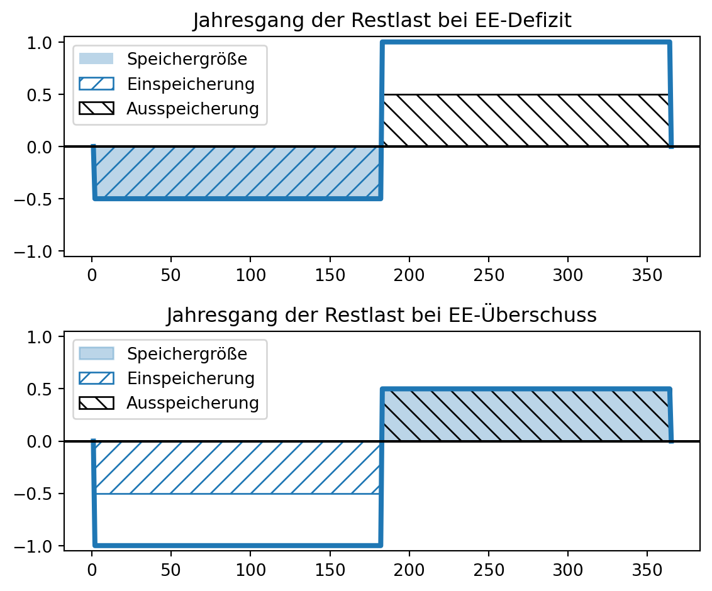
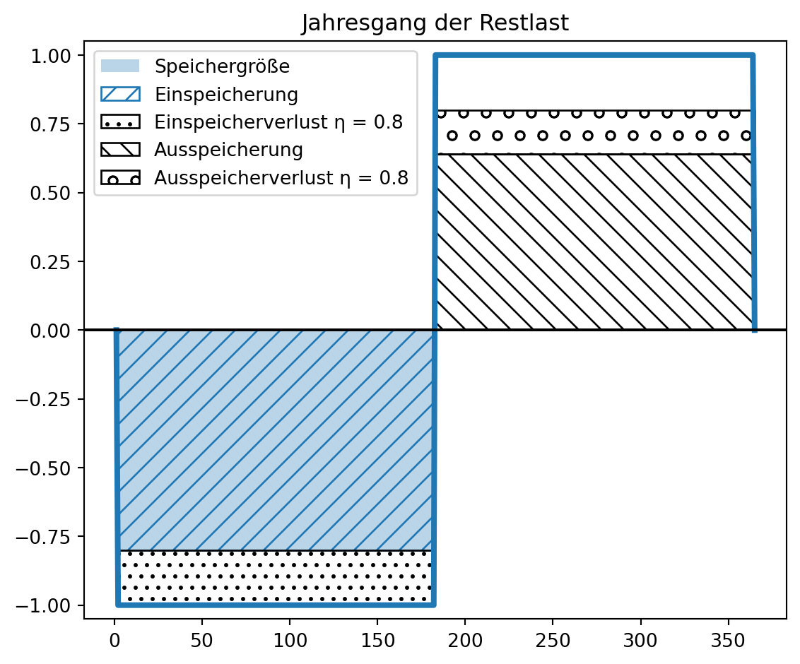

import pandas as pd
pd.set_option("display.precision", 2) # places after decimal for floats
import numpy as np
import matplotlib.pyplot as plt
installierte_leistung0 = pd.read_csv(filepath_or_buffer = \
"skript/01-daten/Installierte_Erzeugungsleistung_202301010000_202401010000_Jahr.csv", \
sep = ";", thousands = ".", decimal = ",", \
parse_dates = [0, 1], date_format = "%d.%m.%Y")
erzeugung0 = pd.read_csv(filepath_or_buffer = \
"skript/01-daten/Realisierte_Erzeugung_202301010000_202401010000_Viertelstunde.csv", \
sep = ";", thousands = ".", decimal = ",", \
parse_dates = [0, 1], date_format = "%d.%m.%Y %H:%M")
verbrauch0 = pd.read_csv(filepath_or_buffer = \
"skript/01-daten/Realisierter_Stromverbrauch_202301010000_202401010000_Viertelstunde.csv", \
sep = ";", thousands = ".", decimal = ",", \
parse_dates = [0, 1], date_format = "%d.%m.%Y %H:%M")Anwendungsbaustein Energiedatenanalyse

Bausteine Computergestützter Datenanalyse. Anwendungsbaustein Energiedatenanalyse von Lukas Arnold, Simone Arnold, Florian Bagemihl, Matthias Baitsch, Marc Fehr, Maik Poetzsch und Sebastian Seipel ist lizensiert unter CC BY 4.0. Das Werk ist abrufbar auf GitHub. Ausgenommen von der Lizenz sind alle Logos und anders gekennzeichneten Inhalte. 2024
Zitiervorschlag
Arnold, Lukas, Simone Arnold, Matthias Baitsch, Marc Fehr, Maik Poetzsch, und Sebastian Seipel. 2024. „Bausteine Computergestützter Datenanalyse. Anwendungsbaustein Energiedatenanalyse“. https://github.com/bausteine-der-datenanalyse/a-energiedatenanalyse.
BibTeX-Vorlage
@misc{BCD-a-ernergiedatenanalyse-2024,
title={Bausteine Computergestützter Datenanalyse. Anwendungsbaustein Energiedatenanalyse},
author={Arnold, Lukas and Arnold, Simone and Baitsch, Matthias and Fehr, Marc and Poetzsch, Maik and Seipel, Sebastian},
year={2024},
url={https://github.com/bausteine-der-datenanalyse/a-energiedatenanalyse}} 1 Voraussetzungen
Die Bearbeitungszeit dieses Bausteins beträgt circa Platzhalter. Für die Bearbeitung dieses Bausteins werden folgende Bausteine vorausgesetzt und die genannten Bibliotheken verwendet:
Werkzeugbaustein Python 3 Links, 3 verschiedene Quellen
Modul random
Modul Pandas
Modul NumPy
Modul matplotlib.pyplot
Methodenbaustein Einlesen strukturierter Datensätze
Querverweis auf:
- Methodenbaustein Grundlagen der Statistik (Kapitel 2 einzelne Merkmale)
Im Baustein werden Strommarktdaten für das Jahr 2023 verwendet. Daten für Deutschland werden von der Bundesnetzagentur bereitgestellt und sind unter https://www.smard.de/ abrufbar. Daten für Österreich werden von der Austrian Power Grid AG bereitgestellt und sind unter https://markttransparenz.apg.at/ abrufbar.
2 Lernziele
TO DO: ergänzen
In diesen Baustein lernen Sie Methoden und Werkzeuge für die Energiedatenanalyse kennen. Zu den vorgestellten Instrumenten gehören:
Berechnung und Visualisierung einer Jahresdauerlinie
Berechnung der Residuallast
Einspeisung glätten (Speicherbedarf für jede EE bestimmen, damit diese konstant einspeisen)
Simones Skript als Quelle benennen und zitieren - ist Lukas auch Autor?
(Arnold 2023)
3 Hintergrund
Elektrischer Strom wird in Kraftwerken erzeugt und über das Stromnetz zu den Stromverbrauchern transportiert. Stromerzeugung und -verbrauch müssen dabei immer ausgeglichen sein. Der Anteil wetterabhängiger erneuerbarer Einspeisung steigt, Strom kann bislang aber nicht (kostengünstig) großtechnisch gespeichert werden. 2023 speisten die Pumpspeicherkraftwerke in Deutschland bei einer Kapazität von 37,4 GWh (Heimerl und Kohler 2017, 77) 11,1 TWh Strom ein, was 2,4 Prozent des deutschen Stromverbrauchs von 458,3 TWh entsprach (Fraunhofer Institut für Solare Energiesysteme ISE o. J.). Die Kraftwerkseinsatzplanung und Speicherauslegung auf Basis von Erzeugungs- und Verbrauchsdaten ist deshalb ein relevantes Anwendungsfeld für die Datenanalyse.
Die Bundesnetzagentur veröffentlicht auf https://www.smard.de/ unter anderem Daten zu Stromerzeugung, -verbrauch und Großhandelspreisen. (Hinweis: Kraftwerksdaten liegen für Erzeugungseinheiten mit einer installierten Erzeugungsleistung von mindestens 100 MW vor.)
idealerweise werden die Konzepte anhand der Daten der FH gezeigt, und mit den SMARD-Daten beübt
4 Daten einlesen
Die Strommarktdaten der Bundesnetzagentur müssen manuell auf https://www.smard.de/ heruntergeladen werden. In diesem Skript werden Daten für das Jahr 2023 benutzt.
| Daten | Dateiname |
|---|---|
| Installierte Erzeugungsleistung 2023 | Installierte_Erzeugungsleistung_202301010000_202401010000_Jahr.csv |
| Realisierte Stromerzeugung 2023 | Realisierte_Erzeugung_202301010000_202401010000_Viertelstunde.csv |
| Realisierter Stromverbrauch 2023 | Realisierter_Stromverbrauch_202301010000_202401010000_Viertelstunde.csv |
Warning 1: SMARD Daten herunterladen
Beim der Auswahl des Zeitraums auf Akzeptieren klicken.
Daten zur installierten Leistung in Originalauflösung (Jahresbasis) auswählen.

Das Datumsformat der Dateien ist abhängig von der auf der Internetseite eingestellten Sprache (Deutsch/English).
Die semikolonseparierten Dateien werden als DataFrame mit dem Python Modul Pandas eingelesen, das mit dem Kürzel pd importiert wird. Dazu wird die Funktion pd.read_csv() verwendet. Dabei werden:
das Wert-, Tausender- und Dezimaltrennzeichen spezifiziert.
sep = ";", thousands = ".", decimal = ","die Spalten mit Datums- und Zeitangaben sowie das Datumsformat bestimmt.
parse_dates = [0, 1], date_format = "%d.%m.%Y %H:%M"
Sehen Sie sich die Zeichenkette zur Spezifikation des Datumsformats an: "%d.%m.%Y %H:%M". Können Sie anhand der Dokumentation bestimmen, welches Format die Datumsangaben in der Datei haben? Welches Format hat der 14. April 2023 um Viertel nach zwei nachmittags?
Aufgabe eher für m-Baustein Einlesen strukturierter Datensätze geeignet. Als Folgeaufgabe könnte man mit Hilfe der Dokumentation die englische Datei ‘Actual_generation_202301010000_202401010000_Quarterhour’ einlesen lassen.
english version
english version
import pandas as pd
erzeugung0_en = pd.read_csv(filepath_or_buffer = \
"skript/01-daten/english/Actual_generation_202301010000_202401010000_Quarterhour.csv", \
sep = ";", thousands = ",", decimal = ".", \
parse_dates = [0, 1], date_format = "%b %d, %Y %I:%M %p") # leading zero is optional for formats %d, %m, %H, %I, %M, %S, %j, %U, %W, and %V
pd.concat([erzeugung0_en.head(2), erzeugung0_en.tail(2)])| Start date | End date | Biomass [MWh] Original resolutions | Hydropower [MWh] Original resolutions | Wind offshore [MWh] Original resolutions | Wind onshore [MWh] Original resolutions | Photovoltaics [MWh] Original resolutions | Other renewable [MWh] Original resolutions | Nuclear [MWh] Original resolutions | Lignite [MWh] Original resolutions | Hard coal [MWh] Original resolutions | Fossil gas [MWh] Original resolutions | Hydro pumped storage [MWh] Original resolutions | Other conventional [MWh] Original resolutions | |
|---|---|---|---|---|---|---|---|---|---|---|---|---|---|---|
| 0 | 2023-01-01 00:00:00 | 2023-01-01 00:15:00 | 1094.25 | 320.0 | 684.25 | 7145.75 | 0.50 | 32.25 | 615.25 | 962.75 | 517.00 | 429.75 | 13.50 | 307.25 |
| 1 | 2023-01-01 00:15:00 | 2023-01-01 00:30:00 | 1091.25 | 317.5 | 743.50 | 7158.25 | 0.25 | 32.25 | 614.75 | 963.25 | 518.00 | 429.50 | 9.75 | 307.25 |
| 35038 | 2023-12-31 23:30:00 | 2023-12-31 23:45:00 | 1053.25 | 412.5 | 1479.25 | 7544.25 | 0.50 | 24.00 | 0.00 | 845.25 | 444.50 | 683.00 | 122.75 | 348.50 |
| 35039 | 2023-12-31 23:45:00 | 2024-01-01 00:00:00 | 1051.50 | 404.0 | 1469.00 | 7480.50 | 0.50 | 24.00 | 0.00 | 840.75 | 442.25 | 679.00 | 58.25 | 348.00 |
Tip 1: Solution date format
| Directive | Meaning |
|---|---|
| %b | Month as locale’s abbreviated name (Jan, Feb, …) with delimiter ” ” |
| %d | Day with delimiter “, ” |
| %Y | Year as four digit decimal with delimiter ” ” |
| %I: | Hour as two digit decimal (leading zero is optional) with delimiter “:” |
| %M | Minute as two digit decimal with delimiter ” ” |
| %p | AM or PM |
Solution: Apr 14, 2023 2:00 PM
Tip 2: Lösung Datumsformat
| Kürzel | Bedeutung |
|---|---|
| %d. | Tag als zweistellige Ganzzahl mit Trennzeichen “.” |
| %m. | Monat (ggf. mit führender Null) mit Trennzeichen “.” |
| %Y | Jahr als vierstellige Ganzzahl mit Trennzeichen ” ” |
| %H: | Stunde als zweistellige Ganzzahl mit Trennzeichen “:” |
| %M | Minute als zweistellige Ganzzahl |
Lösung: 14.04.2023 14:15
5 Daten organisieren
Vor der Datenanalyse sollte überprüft werden, ob die Daten korrekt eingelesen wurden. Dies bedeutet zum einen, zu kontrollieren, ob der Datentyp aller Spalten richtig erkannt wurde. Ob die Spaltentypen einer Datei korrekt eingelesen wurden, können Sie in Python mit dem Befehl df.dtypes überprüfen. Hier der Output des Befehls für den DataFrame erzeugung0.
print(f"Spalten:\n{erzeugung0.dtypes}")Spalten:
Datum von datetime64[ns]
Datum bis datetime64[ns]
Biomasse [MWh] Originalauflösungen float64
Wasserkraft [MWh] Originalauflösungen float64
Wind Offshore [MWh] Originalauflösungen float64
Wind Onshore [MWh] Originalauflösungen float64
Photovoltaik [MWh] Originalauflösungen float64
Sonstige Erneuerbare [MWh] Originalauflösungen float64
Kernenergie [MWh] Originalauflösungen float64
Braunkohle [MWh] Originalauflösungen float64
Steinkohle [MWh] Originalauflösungen float64
Erdgas [MWh] Originalauflösungen float64
Pumpspeicher [MWh] Originalauflösungen float64
Sonstige Konventionelle [MWh] Originalauflösungen float64
dtype: object
Viele der Spaltennamen enthalten die Zeichenkette ” Originalauflösungen”, die der Übersichtlichkeit wegen entfernt werden kann (führendes Leerzeichen beachten). Auf diese Weise könnte auch die Einheitenangabe [MWh] entfernt werden, falls diese als störend empfunden wird.
# Zeichenkette " Originalauflösungen" entfernen
installierte_leistung0.columns = installierte_leistung0.columns.str.replace(pat = " Originalauflösungen", repl = "")
erzeugung0.columns = erzeugung0.columns.str.replace(pat = " Originalauflösungen", repl = "")
print(f"Spalten:\n{erzeugung0.dtypes}")
verbrauch0.columns = verbrauch0.columns.str.replace(pat = " Originalauflösungen", repl = "")Spalten:
Datum von datetime64[ns]
Datum bis datetime64[ns]
Biomasse [MWh] float64
Wasserkraft [MWh] float64
Wind Offshore [MWh] float64
Wind Onshore [MWh] float64
Photovoltaik [MWh] float64
Sonstige Erneuerbare [MWh] float64
Kernenergie [MWh] float64
Braunkohle [MWh] float64
Steinkohle [MWh] float64
Erdgas [MWh] float64
Pumpspeicher [MWh] float64
Sonstige Konventionelle [MWh] float64
dtype: object
Zum anderen sollten die eingelesenen Daten betrachtet werden, um Fehler etwa bei der Umwandlung von Dezimal- und Tausendertrennzeichen, des Datumsformats oder eine unerwartete Anzahl fehlender Werte und sonstige Auffälligkeiten zu identifizieren. Dazu sollten nicht nur die ersten Zeilen des Datensatzes, sondern auch Ausschnitte aus der Mitte und dem Ende kontrolliert werden. Dafür ist der Befehl pd.concat([a, b, c]) nützlich, dem eine Liste von Indexbereichen übergeben werden kann (siehe zweiter und dritter Reiter im folgenden Panel).
# der DataFrame installierte_leistung0 hat nur 1 Zeile
installierte_leistung0| Datum von | Datum bis | Biomasse [MW] | Wasserkraft [MW] | Wind Offshore [MW] | Wind Onshore [MW] | Photovoltaik [MW] | Sonstige Erneuerbare [MW] | Kernenergie [MW] | Braunkohle [MW] | Steinkohle [MW] | Erdgas [MW] | Pumpspeicher [MW] | Sonstige Konventionelle [MW] | |
|---|---|---|---|---|---|---|---|---|---|---|---|---|---|---|
| 0 | 2023-01-01 | 2024-01-01 | 8467.0 | 5049.0 | 8129.0 | 57590.0 | 63066.0 | 440.0 | 4056.0 | 17692.0 | 18127.0 | 31808.0 | 9379.0 | 8958.0 |
pd.concat([erzeugung0.head(2), \
erzeugung0.iloc[len(erzeugung0)//2:(len(erzeugung0)//2+2)], \
erzeugung0.tail(2)])| Datum von | Datum bis | Biomasse [MWh] | Wasserkraft [MWh] | Wind Offshore [MWh] | Wind Onshore [MWh] | Photovoltaik [MWh] | Sonstige Erneuerbare [MWh] | Kernenergie [MWh] | Braunkohle [MWh] | Steinkohle [MWh] | Erdgas [MWh] | Pumpspeicher [MWh] | Sonstige Konventionelle [MWh] | |
|---|---|---|---|---|---|---|---|---|---|---|---|---|---|---|
| 0 | 2023-01-01 00:00:00 | 2023-01-01 00:15:00 | 1094.25 | 320.0 | 684.25 | 7145.75 | 0.50 | 32.25 | 615.25 | 962.75 | 517.00 | 429.75 | 13.50 | 307.25 |
| 1 | 2023-01-01 00:15:00 | 2023-01-01 00:30:00 | 1091.25 | 317.5 | 743.50 | 7158.25 | 0.25 | 32.25 | 614.75 | 963.25 | 518.00 | 429.50 | 9.75 | 307.25 |
| 17520 | 2023-07-02 13:00:00 | 2023-07-02 13:15:00 | 955.25 | 317.5 | 736.00 | 4228.50 | 6832.75 | 25.25 | 0.00 | 795.00 | 216.75 | 546.00 | 0.75 | 264.75 |
| 17521 | 2023-07-02 13:15:00 | 2023-07-02 13:30:00 | 956.75 | 321.5 | 693.75 | 3885.25 | 6961.25 | 25.25 | 0.00 | 791.00 | 215.00 | 545.00 | 0.00 | 266.00 |
| 35038 | 2023-12-31 23:30:00 | 2023-12-31 23:45:00 | 1053.25 | 412.5 | 1479.25 | 7544.25 | 0.50 | 24.00 | 0.00 | 845.25 | 444.50 | 683.00 | 122.75 | 348.50 |
| 35039 | 2023-12-31 23:45:00 | 2024-01-01 00:00:00 | 1051.50 | 404.0 | 1469.00 | 7480.50 | 0.50 | 24.00 | 0.00 | 840.75 | 442.25 | 679.00 | 58.25 | 348.00 |
pd.concat([verbrauch0.head(2), \
verbrauch0.iloc[len(verbrauch0)//2:(len(verbrauch0)//2+2)], \
verbrauch0.tail(2)])| Datum von | Datum bis | Gesamt (Netzlast) [MWh] | Residuallast [MWh] | Pumpspeicher [MWh] | |
|---|---|---|---|---|---|
| 0 | 2023-01-01 00:00:00 | 2023-01-01 00:15:00 | 9720.75 | 1890.25 | 424.75 |
| 1 | 2023-01-01 00:15:00 | 2023-01-01 00:30:00 | 9641.25 | 1739.25 | 443.50 |
| 17520 | 2023-07-02 13:00:00 | 2023-07-02 13:15:00 | 11564.00 | -233.25 | 1147.75 |
| 17521 | 2023-07-02 13:15:00 | 2023-07-02 13:30:00 | 11536.25 | -4.00 | 1223.25 |
| 35038 | 2023-12-31 23:30:00 | 2023-12-31 23:45:00 | 10495.75 | 1471.75 | 470.00 |
| 35039 | 2023-12-31 23:45:00 | 2024-01-01 00:00:00 | 10289.25 | 1339.25 | 528.00 |
Schließlich ist eine Plausibilitätskontrolle der Daten sinnvoll. Einleitend wurde der deutsche Gesamtstromverbrauch im Jahr 2023 genannt, der 458,3 TWh beträgt. Der Stromverbrauch und die Summe der Stromerzeugung sollten diesem Wert ungefähr entsprechen.
# exclude columns with datetime
print("Stromverbrauch in Millionen MWh:\n", \
verbrauch0.sum(numeric_only = True) // (1000 * 1000), sep = "")
print("\nStromerzeugung in Millionen MWh", \
erzeugung0.sum(numeric_only = True).sum() // (1000 * 1000))Stromverbrauch in Millionen MWh:
Gesamt (Netzlast) [MWh] 458.0
Residuallast [MWh] 260.0
Pumpspeicher [MWh] 14.0
dtype: float64
Stromerzeugung in Millionen MWh 448.0
Wenn alle Dateien korrekt eingelesen wurden, können Arbeitsdateien mit dem Befehl df.copy() angelegt werden. Dadurch bleiben die Rohdaten immer verfügbar und können bei Bedarf, beispielsweise nach einem versehentlichen Überschreiben der Arbeitsdateien, erneut geladen werden.
erzeugung = erzeugung0.copy()
verbrauch = verbrauch0.copy()
installierte_leistung = installierte_leistung0.copy()6 Beschreibende Datenanalyse
Mit Methoden der beschreibenden Statistik kann ein Überblick über die Datensätze und die Daten gewonnen werden. Dieser Schritt dient insbesondere auch dazu, mögliche Fehler und Auffälligkeiten im Datensatz zu identifizieren. Hierbei gewonnene Befunde können im der folgenden explorativen und analytischen Datenanalyse vertieft werden.
Einen ersten Überblick über die Daten liefert die Methode pd.DataFrame.describe(). Durch das Argument include = [np.number] kann die Ausgabe auf Spalten mit numerischen Daten beschränkt werden, das heißt, die Spalten mit Datumsinformationen werden ausgeschlossen.
print(f"Der DataFrame erzeugung hat {erzeugung.shape[0]} Zeilen und {erzeugung.shape[1]} Spalten.\n")
erzeugung.describe(include = [np.number])Der DataFrame erzeugung hat 35040 Zeilen und 14 Spalten.
| Biomasse [MWh] | Wasserkraft [MWh] | Wind Offshore [MWh] | Wind Onshore [MWh] | Photovoltaik [MWh] | Sonstige Erneuerbare [MWh] | Kernenergie [MWh] | Braunkohle [MWh] | Steinkohle [MWh] | Erdgas [MWh] | Pumpspeicher [MWh] | Sonstige Konventionelle [MWh] | |
|---|---|---|---|---|---|---|---|---|---|---|---|---|
| count | 35040.00 | 35040.00 | 35040.00 | 35040.00 | 35040.00 | 35040.00 | 35040.00 | 35040.00 | 35040.00 | 35040.00 | 35040.00 | 35040.00 |
| mean | 1079.50 | 411.50 | 671.23 | 3389.91 | 1590.11 | 33.32 | 192.37 | 2221.58 | 1134.42 | 1431.02 | 318.19 | 330.81 |
| std | 80.16 | 83.08 | 457.65 | 2627.46 | 2470.00 | 7.69 | 305.80 | 939.80 | 838.85 | 682.72 | 425.94 | 39.99 |
| min | 892.50 | 249.75 | 0.00 | 30.25 | 0.25 | 21.75 | 0.00 | 634.25 | 170.25 | 373.00 | 0.00 | 208.50 |
| 25% | 1017.50 | 334.00 | 259.00 | 1237.25 | 0.50 | 25.50 | 0.00 | 1396.25 | 506.75 | 893.25 | 38.00 | 304.50 |
| 50% | 1066.75 | 420.50 | 612.25 | 2657.00 | 24.88 | 32.50 | 0.00 | 2111.25 | 814.75 | 1300.00 | 110.75 | 337.00 |
| 75% | 1133.25 | 481.00 | 1040.56 | 5017.19 | 2466.50 | 39.25 | 535.00 | 3000.31 | 1501.00 | 1810.75 | 443.00 | 356.00 |
| max | 1293.25 | 618.25 | 1910.00 | 12039.50 | 10361.25 | 51.25 | 771.00 | 4121.75 | 3814.00 | 4169.25 | 2399.00 | 512.50 |
To Do: value.counts
Aus der beschreibenden Statistik der Daten kann beispielsweise entnommen werden, dass Onshore Wind den größten Beitrag zur Stromerzeugung lieferte. Ebenfalls ist auffällig, dass weder Onshore Wind noch Photovoltaik eine minimale Erzeugung von 0 aufweisen, was jedoch für Wind Offshore und Kernenergie der Fall ist.
Warum ist das bei Photovoltaik so? – Simone fragt nach. In Österreich ist das nicht der Fall!
6.1 Ablesen ist pfui, visualisieren ist hui (Arbeitstitel)
Die Auswertung der beschreibenden Statistik für 12 verschiedene Erzeugungsformen erfordert jedoch Konzentration. Komplexe Informationen sollten deshalb grafisch aufbereitet werden.
Einen schnellen Überblick beispielsweise über die Verteilung der Gesamterzeugungsleistung nach Erzeugungsart verschafft ein Kreis- bzw. Ringdiagramm. Allerdings hat dieser Diagrammtyp, wie im Methodenbaustein Grundlagen der Statistik (Kapitel 2 einzelne Merkmale) erläutert, den Nachteil, dass dieser mit steigender Anzahl von Merkmalsausprägungen (bzw. hier darzustellenden Merkmalen) schnell unübersichtlich wird und Winkel kaum exakt abgelesen werden können.
Im folgenden, mit der Methode pd.DataFrame.plot.pie() erstellten Ringdiagramm wurde deshalb zum einen die automatische Annotation der Anteilswerte mit dem entsprechenden Formatierungsstring autopct='%1.1f%%' aktiviert. Zum anderen wurde die Reihenfolge der Spalten im DataFrame getauscht, da sich die Prozentangaben und Beschriftungen kleiner Kreissegmente andernfalls überlappen. Außerdem wurde für die Beschriftung der Segmente die Zeichkette ” [MWh]” aus den Spaltennamen gekürzt. Dies verbessert zwar die Lesbarkeit des Diagramms. Das ist aber nicht der Grund, weshalb die Zeichenkette entfernt wurde. Was denken Sie, was der Grund dafür ist?
Tip 3: Lösung Kreisdiagramm
Das Kreis- bzw. Ringdiagramm stellt Anteilswerte dar und ist deshalb einheitenlos.
Die Details der Ploterstellung können Sie dem zweiten Reiter entnehmen.

# plot the pie first try - Sonstige Erneuerbare [MWh] overlaps wih Kernenergie [MWh] and Pumpsicher [MWh]
# erzeugung.sum(numeric_only = True).plot.pie(colormap = "Blues", startangle = 90, rotatelabels = True, explode = explosion)
# rearrange columns, remove " [MWh]"
plotting_data = erzeugung.copy()
column_to_move = plotting_data.pop("Kernenergie [MWh]")
plotting_data.insert(4, "Kernenergie [MWh]", column_to_move)
column_to_move = plotting_data.pop("Pumpspeicher [MWh]")
plotting_data.insert(10, "Pumpspeicher [MWh]", column_to_move)
plotting_data.columns = plotting_data.columns.str.replace(pat = " [MWh]", repl = "")
# plot the pie
ax = plotting_data.sum(numeric_only = True).plot.pie(colormap = "Blues", startangle = 90, rotatelabels = False, autopct='%1.1f%%', pctdistance = 0.6, textprops = dict(size = 7, color = 'black'), wedgeprops = {"linewidth": 0.5, "edgecolor": "white"})
# make a donut
my_axis = plt.gca() # plt.gca = get current axis
circle = plt.Circle((0, 0), radius = 0.7, color = "white")
ax.add_patch(circle)Daten aggregieren
Aufgrund der zahlreichen Merkmale erschließt sich aus der deskriptiven und visuellen Beschreibung der Erzeugungsleistung nicht unbedingt ein prägnanter Befund. Eine Möglichkeit, um Daten besser zu verstehen, besteht darin, ähnliche Merkmale zusammenzufassen. Im Folgenden werden erneuerbare und konventionelle (mit fossilen Brennstoffen betriebene) Erzeugungsarten für die Darstellung der Anteilswerte in einem Ringdiagramm zusammengefasst. Beide Gruppen werden zusätzlich in einem Balkendiagramm dargestellt. Für die Darstellung wird das Modul matplotlib.pyplot verwendet. Die Details der Ploterstellung können Sie dem zweiten Reiter entnehmen. Marc fragen, ob er Erläuterungen zum Plot wünscht.

# Erneuerbare und Konventionelle bestimmen, jeweils summieren
## Erneuerbare
plotting_data = erzeugung.copy()
plotting_data.drop(columns = ['Datum von', 'Datum bis', 'Biomasse [MWh]', 'Wasserkraft [MWh]', 'Wind Offshore [MWh]',
'Wind Onshore [MWh]', 'Photovoltaik [MWh]',
'Sonstige Erneuerbare [MWh]'], inplace = True) # Datumsspalten entfernen, inplace = False liefert eine Kopie und tut deshalb ohne Objektzuweisung 'nichts'
erneuerbare = ['Biomasse [MWh]', 'Wasserkraft [MWh]', 'Wind Offshore [MWh]', 'Wind Onshore [MWh]', 'Photovoltaik [MWh]',
'Sonstige Erneuerbare [MWh]']
plotting_data["Erneuerbare"] = erzeugung[erneuerbare].sum(axis = 'columns')
## Konventionelle
plotting_data.drop(columns = ['Braunkohle [MWh]', 'Steinkohle [MWh]', 'Erdgas [MWh]', 'Sonstige Konventionelle [MWh]'], inplace = True)
konventionelle = ['Braunkohle [MWh]', 'Steinkohle [MWh]', 'Erdgas [MWh]', 'Sonstige Konventionelle [MWh]']
plotting_data["Konventionelle"] = erzeugung[konventionelle].sum(axis = 'columns')
# rearrange columns, remove " [MWh]"
plotting_data = plotting_data[['Erneuerbare', 'Pumpspeicher [MWh]', 'Konventionelle', 'Kernenergie [MWh]']]
plotting_data.columns = plotting_data.columns.str.replace(pat = " [MWh]", repl = "")
# zur Kontrolle - axis = columns addiert die Spalten zeilenweise
## print(erneuerbare)
## print(erzeugung[erneuerbare].sum(axis = 'columns'))
## print(plotting_data.columns)
## print(plotting_data[0:3])
# Grafik mit drei subplots erzeugen
plt.figure(figsize = (7.5, 7.5))
nrows = 4
ncols = 2
font_size = 8
# value for shared x-axis on barplots
x_lim = erzeugung.sum(numeric_only = True).max() * 1.1
# array of colors
my_colors = plt.get_cmap('Blues')(np.linspace(0.2, 1, len(plotting_data.sum())))
# plot the pie, use 4 out of 8 panels = middle 2 rows
ax = plt.subplot(nrows, ncols, (3, 6))
plt.pie(x = plotting_data.sum(), colors = my_colors, startangle = 350, labels = list(plotting_data.columns), autopct='%1.1f%%', pctdistance = 0.5, textprops = dict(size = font_size + 1), wedgeprops = {"linewidth": 0.5, "edgecolor": "white"})
# make a donut
my_axis = plt.gca() # plt.gca = get current axis
circle = plt.Circle((0, 0), radius = 0.65, color = "white")
ax.add_patch(circle)
# top row unstacked barplot
plt.subplot(nrows, ncols, (1, 2))
erzeugung[erneuerbare].sum().sort_values(ascending = False).plot.barh(fontsize = font_size, xlim = (0, x_lim), color = my_colors[0], edgecolor = 'darkgrey')
plt.title("Erneuerbare", fontsize = font_size + 2)
# bottom row unstacked barplot
plt.subplot(nrows, ncols, (7, 8))
erzeugung[konventionelle].sum().sort_values(ascending = False).plot.barh(fontsize = font_size, xlim = (0, x_lim), color = my_colors[2], edgecolor = 'darkgrey')
plt.title("Konventionelle", fontsize = font_size + 2)
plt.tight_layout()
plt.show()
Durch die Aggregation ähnlicher Stromerzeugungsarten wurde das Ringdiagramm auf vier Erzeugungsarten reduziert. Die mit nur geringen Anteilen an der Gesamtstromerzeugung beteiligten Erzeugungsarten Pumpspeicher und Kernenergie treten dadurch gegenüber der Einzeldarstellung aller Erzeugungsarten deutlich hervor. Auf dieser Grundlage kann diskutiert werden, ob die gezeigte Aggregation zweckmäßig ist. So könnte einerseits die Kernenergie den Konventionellen zugeschlagen werden, wenn für diese Gruppe nicht auf das Merkmal einer Erzeugung mit fossilen Brennstoffen, sondern auf das Prinzip thermischer Dampfexpansion abgestellt wird. Andererseits sollte die Erzeugung durch Pumpspeicher kritisch hinterfragt werden. Dieser Aspekt wird im folgenden Abschnitt diskutiert.
Warning 2: Hinweis
Komplexe Grafiken, wie die hier gezeigte, sollten im Allgemeinen sparsam eingesetzt werden, da sie schwer zu erfassen und zu interpretieren sind. Die Zweck der Grafik und die wesentlichen Schlussfolgerungen sollten deshalb im Text erläutert werden.
Tipp: Stellen Sie sich vor, Sie würden die Grafik spontan einem:einer Freund:in zeigen, die Ihre Arbeit nicht gelesen hat. Wie würden Sie Ihrer:Ihrem Freund:in die Grafik erklären? Schreiben Sie es in Ihrer Arbeit auf.
Erzeugung, Speicherung, Einspeisung
Pumpspeicherkraftwerke sind Energiespeicher, die keine Primärenergie erzeugen, sondern den von anderen Erzeugern produzierten Strom speichern und bei Bedarf wieder ins Netz einspeisen. Die realisierte Netzeinspeisung von Pumpspeicherkraftwerken entspricht somit der um die Verluste beim Ein- und Ausspeichern (sowie ggf. Speicherverluste wie Verdunstung, Versickerung) verminderten Energieerzeugung anderer Stromerzeuger. Der Wirkungsgrad der Pumpspeicherkraftwerke kann mit den vorliegenden Daten für das Jahr 2023 berechnet werden. Wie hoch war der Wirkungsgrad der Pumpspeicherkraftwerke 2023?
Welche Erzeuger Strom zum Befüllen der Pumpspeicher lieferten, wird in Kapitel 7 untersucht.
Tip 4: Lösung Wirkungsgrad Pumpspeicher
print(f"Summe Erzeugung Pumpspeicher: {erzeugung["Pumpspeicher [MWh]"].sum():.2f}\n"
f"Summe Verbrauch Pumpspeicher: {verbrauch["Pumpspeicher [MWh]"].sum():.2f}\n"
f"{41 * "="}\n"
f"Wirkungsgrad in Prozent: \t\t\t{( erzeugung["Pumpspeicher [MWh]"].sum() / verbrauch["Pumpspeicher [MWh]"].sum() ) * 100:.2f}")Summe Erzeugung Pumpspeicher: 11149398.50
Summe Verbrauch Pumpspeicher: 14095632.75
=========================================
Wirkungsgrad in Prozent: 79.10Die tatsächlich realisierte Stromerzeugung ist deshalb die von der Bundesnetzagentur veröffentlichte kumulierte Stromerzeugung der Pumpspeicherkraftwerke zuzüglich der Speicherverluste. Die Bundesnetzagentur führt diesen Wert im Datensatz Stromverbrauch. Im folgenden Programmcode wird der “Walross”-Operator := benutzt, der Objektzuweisungen innerhalb von Anweisungen erlaubt. Mit dem Walross-Operator durchgeführte Zuweisungen müssen in runde Klammern eingefasst werden:
print(f"Speicherverluste:\t\t\t{ (speicherverluste := ( verbrauch["Pumpspeicher [MWh]"].sum() - erzeugung["Pumpspeicher [MWh]"].sum() ) / (1000 * 1000) ):>6.2f} TWh\n"
f"kumulierte Stromerzeugung:\t{ ( kumulierte_erzeugung := erzeugung.sum(numeric_only = True).sum() // (1000 * 1000) ):.2f} TWh\n"
f"Summe:\t\t\t\t\t\t{speicherverluste + kumulierte_erzeugung:.2f} TWh\n\n"
f"Erzeugung durch Pumpspeicher:\t\t\t\t{erzeugung["Pumpspeicher [MWh]"].sum() / (1000 * 1000):.2f} TWh\n"
f"Erzeugung Pumpspeicher + Speicherverluste:\t{(erzeugung["Pumpspeicher [MWh]"].sum() / (1000 * 1000)) + speicherverluste:.2f} TWh\n"
f"Verbrauch Pumpspeicherkraftwerke:\t\t\t{verbrauch["Pumpspeicher [MWh]"].sum() / (1000 * 1000):.2f} TWh")Speicherverluste: 2.95 TWh
kumulierte Stromerzeugung: 448.00 TWh
Summe: 450.95 TWh
Erzeugung durch Pumpspeicher: 11.15 TWh
Erzeugung Pumpspeicher + Speicherverluste: 14.10 TWh
Verbrauch Pumpspeicherkraftwerke: 14.10 TWhBraucht es hier einen Hinweis, dass hier keine Erkenntnis produziert wird, sondern nur zur Veranschauung hin- und hergerechnet wird?
Die Differenz zwischen tatsächlich realisierter und von der Bundesnetzagentur veröffentlichter Stromerzeugung beträgt knapp 3 TWh, also weniger als 1 Prozent der Gesamtstromerzeugung. In anderen Netzen ist die korrekte Zuordnung der Daten auch betragsmäßig relevant.
6.2 Aufgabe beschreibende Datenanalyse
In Österreich spielen Pumpspeicherkraftwere eine bedeutende Rolle im Strommix.

Blick vom Schlegeisspeicher von Höhenweg aus. von Klaus Kettner steht unter der Lizenz CC BY-SA 3.0 und ist abrufbar auf Wikimedia. Das Bild wurde zugeschnitten und im Format PNG gespeichert. 2012.
Wie die Bundesnetzagentur veröffentlicht auch die Austrian Power Grid AG (APG) Strommarktdaten unter https://markttransparenz.apg.at/. Unter dem Link können Erzeugungsdaten für das Jahr 2023 heruntergeladen werden.
Diesem Skript ist folgende Datei angefügt.
| Daten | Dateiname |
|---|---|
| Realisierte Stromerzeugung 2023 | AGPT_2022-12-31T23_00_00Z_2023-12-31T23_00_00Z_15M_de_2024-06-10T09_32_38Z.csv |
Lesen Sie die österreichischen Erzeugungsdaten ein und visualisieren Sie die Anteile der Erzeugungstypen. Was fällt Ihnen im Datensatz auf?
Hat Marc Lust, eine Musterlösung zu erstellen?
Warning 3: Markttranzparenzdaten Österreich herunterladen
Nach der Auswahl des Zeitraums auf Exportieren klicken, dann erscheint die Schaltfläche Download.


Das Datumsformat der Dateien ist abhängig von der auf der Internetseite eingestellten Sprache (Deutsch/English).
Tip 5: Musterlösung Strommarktdaten Österreich
Ich bin gemein und will noch nichts verraten.
Tipp
Der Datensatz ist anders zusammengestellt. Pumpspeicher weisen teils negative Werte auf… die müssen natürlich bereinigt werden, um mit den Daten der Bundesnetzagentur verglichen zu werden.
Alle negativen Werte = Einspeichern (entspricht Verbrauchsdaten der Bundesnetzagentur)
Alle positiven Werte = Einspeisung (entspricht Erzeugungsdaten der Bundesnetzagentur)
(Hinweis: Ich habe bislang nur kurz in den Datensatz reingeschaut.)
Optionen für Abschnitt beschreibende Statistik
- gestapeltes Histogramm (das ist schwer, wenn man es nicht manuell macht) für die Erzeugung in einem Monat oder in einer Woche - eine Woche im Winter, eine Woche im Sommer
Eigentlich müsste man die Datensätze umstrukturieren, wenn man weiter damit arbeiten möchte, um Erzeugung von Speicherung zu trennen.
7 Explorative Datenanalyse
Explorative Datenanalyse bedeutet, Fragen an die vorliegenden Daten zu stellen und diese mittels datenanalytischer Methoden zu beantworten. Die so gewonnenen Erkenntnisse können helfen, die Fragen zu verfeinern oder neue Fragen zu generieren. Es handelt sich also um einen iterativen Prozess. Dadurch soll vor allem ein tieferes Verständnis der Daten gewonnen werden. (Wickham, Çetinkaya-Rundel, und Grolemund 2023, Kap. 10 Exploratory data analysis)
7.1 Grenzstromanalyse
Im vorliegenden Fall wird die explorative Auseinandersetzung mit dem Datensatz von der Frage strukturiert, welche Erzeuger Strom lieferten, um zusätzlich zur Netzlast die Pumpspeicher zu befüllen. Es soll also bestimmt werden, welche Stromerzeuger an den Zeitpunkten, an denen die Pumpspeicher befüllt wurden, in der Lage waren, zusätzliche Leistung bereitzustellen. Dieser zusätzliche Strom kann kurz als Grenzstrom bezeichnet werden.
Definition Grenzstrom
Grenzbetrachtungen untersuchen die Bedingungen, die bei der Produktion oder dem Verbrauch einer zusätzlichen Einheit herrschen. Eine Grenzbetrachtung unterscheidet sich dadurch von einer Durchschnittsbetrachtung, die den Effekt einer Mengenänderung auf alle Einheiten untersucht. Der Grenzstrom bezeichnet eine zusätzliche Einheit Strom.
Beispielsweise bestehe die momentane Stromerzeugung in Höhe von 100 Einheiten aus 60 Einheiten Solarstrom und, weil die solare Produktion nicht ausreicht, zusätzlich aus 40 Einheiten Kohlestrom. In diesem Fall enthält jede Einheit Strom durchschnittlich 0,4 Anteile Kohlestrom. Werden nun weitere 20 Einheiten Strom nachgefragt, so müssen diese durch eine zusätzliche Kohleverstromung bedient werden. In der Durchschnittsbetrachtung beträgt der Strommix nun aus 60 Einheiten Solarstrom und 40 + 20 = 60 Einheiten Kohlestrom. Dadurch verändert sich der durchschnittliche Anteil der Kohle an der Stromproduktion von 0,4 auf 0,5.
In der Grenzbetrachtung beträgt der Kohleanteil des zusätzlich verbrauchten Stroms 20 von 20 Einheiten, also 1.
Hintergrund: Einspeisevorrang erneuerbarer Energien
In Deutschland gilt seit dem Jahr 2000 das Erneuerbare-Energien-Gesetz, das ursprünglich als Gesetz für den Vorrang Erneuerbarer Energien eingeführt wurde Dokumentations- und Informationssystem für Parlamentsmaterialien. Dieses regelte in § 3 den Einspeisevorrang erneuerbarer Energien:
Abnahme- und Vergütungspflicht
(1) Netzbetreiber sind verpflichtet, Anlagen zur Erzeugung von Strom nach § 2 an ihr Netz anzuschließen, den gesamten angebotenen Strom aus diesen Anlagen vorrangig abzunehmen und den eingespeisten Strom nach §§ 4 bis 8 zu vergüten.
Gesetz für den Vorrang Erneuerbarer Energien (Erneuerbare-Energien-Gesetz – EEG) sowie zur Änderung des Energiewirtschaftsgesetzes und des Mineralölsteuergesetzes. Bundesgesetzblatt Jahrgang 2000 Teil I Nr. 13, ausgegeben zu Bonn am 31. März 2000. Bundesanzeiger
Als erneuerbare Energien klassifizierte Erzeuger speisen vorrangig in das Netz ein. Dies sind nach der aktuellen Fassung des Gesetztes:
Wasserkraft einschließlich der Wellen-, Gezeiten-, Salzgradienten- und Strömungsenergie,
Windenergie,
solare Strahlungsenergie,
Geothermie,
Energie aus Biomasse einschließlich Biogas, Biomethan, Deponiegas und Klärgas sowie aus dem biologisch abbaubaren Anteil von Abfällen aus Haushalten und Industrie
Gesetz für den Ausbau erneuerbarer Energien (Erneuerbare-Energien-Gesetz - EEG 2023). § 3 Begriffsbestimmungen. https://www.gesetze-im-internet.de/eeg_2014/__3.html
Die nicht erneuerbaren Erzeuger arbeiten im Lastfolgebetrieb zur Deckung der Restlast, das heißt der Netzlast abzüglich der erneuerbaren Erzeugungsleistung. Dies bedeutet, dass zwei Szenarien zu unterscheiden sind:
Überschuss an erneuerbaren Energien: Der Stromverbrauch wird vollständig durch die Erzeugung erneuerbarer Energien gedeckt und es besteht ein Erzeugungsüberschuss (bzw. Erzeuger wurden abgeregelt), aus dem zusätzlicher Stromverbrauch bedient werden kann.
Strommix aus erneuerbarer Einspeisung und Lastfolgebetrieb nicht erneuerbarer Erzeuger: Erneuerbare Energien speisen mit voller Leistung ein, die Restlast und zusätzlicher Stromverbrauch wird von nicht erneuerbaren Erzeugern gedeckt.
Die welches Szenario im Stromnetz zu einem bestimmten Zeitpunkt besteht, lässt sich also an der Restlast ablesen.
Residual- und Restlast bestimmen
Die Bundesnetzagentur veröffentlicht im Datensatz zum realisierten Stromverbrauch Netzlast, Residuallast und den Stromverbrauch durch Pumpspeicherkraftwerke.
print(verbrauch.sum(numeric_only = True))Gesamt (Netzlast) [MWh] 4.58e+08
Residuallast [MWh] 2.60e+08
Pumpspeicher [MWh] 1.41e+07
dtype: float64
Definition Residuallast
Die Residuallast […] entspricht dem gesamten Realisierten Stromverbrauch, abzüglich der Einspeisung von Photovoltaik-, Wind Onshore- und Wind Offshore-Anlagen. SMARD.de Benutzerhandbuch (S. 53)
Die nicht durch erneuerbare Energien bediente Restlast ist die Differenz aus Stromverbrauch und der Erzeugung durch erneuerbare Energien. Die Restlast ist folglich kleiner als die von der Bundesnetzagentur veröffentlichte Residuallast. Residual- und Restlast können aus der Differenz von Netzlast und der entsprechenden erneuerbaren Stromerzeugung berechnet werden.
erneuerbare = ['Biomasse [MWh]', 'Wasserkraft [MWh]', 'Wind Offshore [MWh]', 'Wind Onshore [MWh]', 'Photovoltaik [MWh]', 'Sonstige Erneuerbare [MWh]']
PV_WindOnshore_WindOffshore = ['Wind Offshore [MWh]', 'Wind Onshore [MWh]', 'Photovoltaik [MWh]']
plotting_data = pd.DataFrame()
plotting_data["Netzlast [MWh]"] = verbrauch["Gesamt (Netzlast) [MWh]"].copy()
plotting_data["volatile EE [MWh]"] = erzeugung[PV_WindOnshore_WindOffshore].sum(axis = "columns").copy()
plotting_data["Erneuerbare [MWh]"] = erzeugung[erneuerbare].sum(axis = "columns").copy()
plotting_data["Residuallast BNetzA [MWh]"] = verbrauch["Residuallast [MWh]"].copy()
plotting_data["Residuallast [MWh]"] = plotting_data["Netzlast [MWh]"] - plotting_data["volatile EE [MWh]"]
plotting_data["Restlast [MWh]"] = plotting_data["Netzlast [MWh]"] - plotting_data["Erneuerbare [MWh]"]
plotting_data.head()| Netzlast [MWh] | volatile EE [MWh] | Erneuerbare [MWh] | Residuallast BNetzA [MWh] | Residuallast [MWh] | Restlast [MWh] | |
|---|---|---|---|---|---|---|
| 0 | 9720.75 | 7830.50 | 9277.00 | 1890.25 | 1890.25 | 443.75 |
| 1 | 9641.25 | 7902.00 | 9343.00 | 1739.25 | 1739.25 | 298.25 |
| 2 | 9609.50 | 8119.50 | 9559.50 | 1490.00 | 1490.00 | 50.00 |
| 3 | 9565.00 | 7919.00 | 9362.25 | 1646.00 | 1646.00 | 202.75 |
| 4 | 9473.50 | 8107.75 | 9540.50 | 1365.75 | 1365.75 | -67.00 |
Die von der Bundesnetzagentur veröffentlichte Residuallast Residuallast BNetzA [MWh] entspricht nach der Betrachtung der ersten Zeilen der selbst berechneten Residuallast Residuallast [MWh]. Ob dies für die gesamte Zeitreihe gilt, kann leicht mit der Methode pd.Series.equals() überprüft werden.
plotting_data['Residuallast BNetzA [MWh]'].equals(plotting_data['Residuallast [MWh]'])TrueSomit kann die redundante Spalte entfernt werden.
plotting_data.drop(['Residuallast BNetzA [MWh]'], axis = 'columns', inplace = True)Jahresgang grafisch darstellen
Die Netzlast, die Erzeugung durch erneuerbare Energien sowie die Residual- und Restlast sollen im Jahresgang dargestellt werden. Zur besseren Darstellung wird nur jeder 100. Wert eingezeichnet.

# Position und Inhalt der x-Achsenbeschriftung finden
monate = erzeugung["Datum von"].dt.month.unique().tolist() # gibt die Zahlen 1-12 aus
## mit Pandas
monate_index = erzeugung[~erzeugung["Datum von"].dt.month.duplicated()].index
monatsnamen = erzeugung["Datum von"].iloc[monate_index].dt.strftime("%B")
## alternativ mit einer Listenoperation
# monate_index = []
# monatsnamen = []
# for i in monate:
# monate_index.append(erzeugung.index[erzeugung["Datum von"].dt.month == i].min())
# monatsnamen.append(erzeugung["Datum von"].iloc[monate_index[i - 1]].strftime("%B"))# plotten jedes 100. Werts
plotting_data[::100].plot(figsize = (9, 8), subplots = True, sharey = True, xlim = (plotting_data.index.min() - (len(plotting_data.index) / 100), plotting_data.index.max() * 1.01), rot = 45, grid = True)
plt.ylim(top = 20000)
plt.minorticks_off()
plt.xticks(monate_index, monatsnamen);Es ist zu erkennen, dass die Netzlast dauerhaft oberhalb von 9000 MWh liegt. Darüber hinausgehend schwankt die Netzlast im Monatsgang stark. In jedem Monat werden Leistungen nahe des absoluten Minimums und Maximums erreicht. Im Sommer ist die Netzlast im Allgemeinen etwas niedriger als im Winter.
Die Stromerzeugung durch erneuerbare Energien ist stark volatil. Phasen hoher Produktion wechseln sich mit Phasen geringer Produktion ab und dauern jeweils nur einige Tage und höchstens für zwei Wochen an. Dies geht maßgeblich auf die Stromerzeugung durch Photovoltaik und Off- und Onshore Wind zurück, deren deutschlandweit kombinierte Erzeugungsleistung häufig nahe Null liegt, um anschließend ein (lokales) Produktionsmaximum zu erreichen. Die zusätzliche Einspeisung weniger volatiler erneuerbarer Energien wie Biomasse und Wasserkraft ist vergleichsweise gering, sodass auch die über alle Erzeugungsformen summierte erneuerbare Stromerzeugung zwar nie Null, häufig aber eine geringe Gesamtleistung erreicht. Gleichwohl gibt es auch kurze Phasen erneuerbarer Vollversorgung bzw. Überschussproduktion, wie am Jahresgang der nicht erneuerbaren Restlast abzulesen ist.
Für die Frage nach der Herkunft des in den Pumpspeicherkraftwerken gespeicherten Stroms kann bereits durch die graphische Darstellung gefolgert werden, dass dieser überwiegend durch nicht erneuerbare Stromerzeuger erzeugt wurde, da die Restlast nur selten Null oder negativ ist.
Der Jahresgang der Restlast gleicht dem Erzeugungsverlauf der volatilen erneuerbaren Energien. Dies stellt für die konventionellen Kraftwerke eine Herausforderung dar. Dieser Aspekt wird im nächsten Abschnitt vertieft.
Zunächst aber eine kleine Aufgabe: Wie würde sich eine Verdopplung der erneuerbaren Erzeugung auf die Restlast auswirken? Stellen Sie den Effekt auf vergleichbare Weise grafisch dar (z. B. durch eine zusätzliche Spalte ‘Netzlast - 2x EE’).
Tip 6: Musterlösung Verdopplung EE

plotting_data_2EE = plotting_data.copy()
plotting_data_2EE["2x EE"] = plotting_data_2EE["Erneuerbare [MWh]"] * 2
plotting_data_2EE["Netzlast - 2x EE"] = plotting_data_2EE["Netzlast [MWh]"] - plotting_data_2EE["2x EE"]
plotting_data_2EE = plotting_data_2EE[["Netzlast [MWh]", "Netzlast - 2x EE"]]
# plotten jedes 100. Werts
plotting_data_2EE[::100].plot(figsize = (9, 6), subplots = True, sharey = True, xlim = (plotting_data_2EE.index.min() - (len(plotting_data_2EE.index)) / 100, plotting_data_2EE.index.max() * 1.01), rot = 45, grid = True)
plt.minorticks_off()
plt.xticks(monate_index, monatsnamen);Die Netzlast abzüglich der verdoppelten erneuerbaren Stromerzeugung nähert sich einer symmetrischen Verteilung um die Nullinie an. Das heißt, Phasen erneuerbarer Über- und Unterproduktion halten sich ungefähr die Waage.
Hintergrund: Grund-, Mittel und Spitzenlast
Nicht alle Erzeuer sind aus technischen oder aus wirtschaftlichen Gründen gleichermaßen für den Lastfolgebetrieb geeignet. Beispielsweise sind Kohlekraftwerke weniger flexibel regelbar als Gaskraftwerke. Kernkraftwerke werden aufgrund ihrer hohen Fix- und geringen variablen Kosten bevorzugt im Grundlastbetrieb betrieben. Im Stromnetz werden drei Einsatzprofile für Kraftwerke unterschieden: Grundlast, Mittellast und Spitzenlast.
Definition Grund-, Mittel- und Spitzenlast
Grundlast: Die im Jahresgang dauerhaft nachgefragte Leistung.
Kraftwerkstypen: Braunkohle, Kernkraft, LaufwasserMittellast: Über die Grundlast hinausgehende, im Tages- und Jahresgang planbar nachgefragte Leistung.
Kraftwerkstypen: Gas-und-Dampfturbinen-Kraftwerk, SteinkohleSpitzenlast: Über die Mittellast hinausgehende, im Tages- und Jahresgang nur kurzzeitig oder ungeplant nachgefragte Leistung.
Kraftwerkstypen: Gaskraftwerke, Pumpspeicherkraftwerke
ISPEX AG: Grundlast, Mittellast, Spitzenlast
Grünwald, Reinhard / Caviezel, Claudio 2017: Lastfolgefähigkeit deutscher Kernkraftwerke. Monitoring. Büro für Technikfolgen-Abschätzung beim Deutschen Bundestag (TAB). doi: 10.5445/IR/1000102277. Seite 16.
Für die Frage, welche Kraftwerke den Grenzstrom zur Befüllung der Pumpspeicherkraftwerke liefern, ist insbesondere die Unterscheidung von im Grundlastbetrieb operierenden Kraftwerken einerseits sowie von im Mittellast- und Spitzenlastbetrieb arbeitenden Kraftwerken andererseits relevant. In Grundlast operierende Kraftwerke fahren 24 Stunden am Tag in Volllast. Beispielsweise erreichte Kernenergie im Jahr 2021 mit 8.070 Jahresvolllaststunden beinahe einen durchgehenden Volllastbetrieb statista. In Volllast betriebene Kraftwerke können nicht mehr auf zusätzliche Stromnachfrage reagieren. Dies bleibt im Mittel- und Spitzenlastbetrieb arbeitenden Kraftwerken überlassen.
Somit können durch die Unterscheidung von in Grundlast und von in Mittel- bzw. Spitzenlast betriebenen Kraftwerkstypen die Kraftwerkstypen, die den zur Befüllung der Pumpspeicherkraftwerken erforderlichen Strom lieferten, eingegrenzt werden.
Die Auslastung eines Kraftwerks (bzw. einer Gruppe von Kraftwerken) kann mittels seiner Jahresvolllaststunden quantifiziert werden.
Definition Jahresvolllaststunden
Die Jahresvolllaststunden geben an, wie viel der 8.760 Stunden eines Jahres ein Kraftwerk bei maximaler Leistung laufen müsste, um seine Jahresproduktion zu erzeugen. statista
\[ Jahresvolllaststunden ~ in ~ h = \frac{Summe ~ erzeugten ~ Stroms ~ in ~ MWh}{installierte ~ Leistung ~ in ~ MW} \]
Die Jahresvolllaststunden können wie folgt berechnet werden. Die Anwendung der Methode .sum auf den Datensatz installierte_leistung ist nicht erforderlich, da dieser nur eine Zeile hat. Die Methode .sum erlaubt es aber, über den Parameter numeric_only = True die Datumsspalten auszuschließen.
Einfache Division SeriesA / SeriesB funktioniert nicht, möglicherweise weil die Spaltennamen nicht übereinstimmen. Deshalb muss der Index für beide Series mit der Methode .reset_index(drop = True) zurückgesetzt und manuell nachgetragen werden.
# print(f"{erzeugung.sum(numeric_only = True)}\n")
# print(installierte_leistung.sum(numeric_only = True), "\n")
# Für die Division müssen die Indizes zurücksetzt werden
jahresvolllaststunden = erzeugung.sum(numeric_only = True).reset_index(drop = True).divide(installierte_leistung.sum(numeric_only = True).reset_index(drop = True))
# Index neu setzen
jahresvolllaststunden.index = erzeugung.sum(numeric_only = True).index.str.replace(pat = " [MWh]", repl = " [h]")
print(f"\n\nJahresvolllaststunden\n\n{jahresvolllaststunden.sort_values(ascending = False)}")
Jahresvolllaststunden
Biomasse [h] 4467.41
Braunkohle [h] 4399.96
Wind Offshore [h] 2893.34
Wasserkraft [h] 2855.83
Sonstige Erneuerbare [h] 2653.47
Steinkohle [h] 2192.86
Wind Onshore [h] 2062.55
Kernenergie [h] 1661.92
Erdgas [h] 1576.42
Sonstige Konventionelle [h] 1293.98
Pumpspeicher [h] 1188.76
Photovoltaik [h] 883.48
dtype: float64Die Berechnung der Jahresstunden zeigt, dass kein Kraftwerkstyp auch nur annähernd in Volllast lief. Die höchste Auslastung weisen Biomasse und Braunkohle auf. Biomasse ist umgerechnet in 51 Prozent der 8760 Jahresstunden in Volllast gelaufen, Braunkohle in 50 Prozent. Demgegenüber erreichte der klassische Grundlasterzeuger Kernenergie nur 25 Prozent. Die in Deutschland hauptsächlich für den Mittellastbetrieb eingesetzte Steinkohle erreichte 19 Prozent. Das Jahr 2023 war insbesondere für die Kernenergie ein ungewöhnliches Jahr.
Deshalb wird der Jahresgang ausgewählter konventioneller Erzeuger dargestellt. Um eine hohe Auflösung zu erreichen, wird eine Darstellung auf Monatsbasis gewählt. Man könnte zusätzlich Phasen des EE-Überschusses farblich hinterlegen (mit einem flotten Grau).
plotting_data = erzeugung.copy()
erzeuger = "Kernenergie"
fig = plt.figure(figsize = (8, 12))
fig.suptitle(erzeuger, fontsize = 12)
for i in range(1, 13):
plotting_data_monthly = plotting_data[plotting_data['Datum von'].dt.month == i]
ax = fig.add_subplot(12, 1, i)
ax.plot(plotting_data_monthly[erzeuger + " [MWh]"])
plt.margins(x = 0.01)
ax.set_ylabel(ylabel = "MWh")
# Titel erzeugen
plt.title(label = plotting_data_monthly['Datum von'].head(1).dt.strftime('%B').item(), fontsize = 10)
# xticks erzeugen
tage_index = plotting_data_monthly[~plotting_data_monthly["Datum von"].dt.day.duplicated()].index
tagesnamen = plotting_data_monthly["Datum von"].dt.day.unique()
plt.xticks(tage_index, tagesnamen, fontsize = 8)
plt.tight_layout()
rausfinden, warum das nicht geht:
# xticks auf Monatsbasis anlegen geht
# monate_index = erzeugung[~erzeugung["Datum von"].dt.month.duplicated()].index
# monatsnamen = erzeugung["Datum von"].iloc[monate_index].dt.strftime("%B")
# xticks auf Tagesbasis anlegen geht nicht
# tage_index = plotting_data_monthly[~plotting_data_monthly["Datum von"].dt.day.duplicated()].index
# tagesnamen = plotting_data_monthly["Datum von"].iloc[tage_index].dt.strftime("%d")
# Ersatz: tagesnamen = plotting_data_monthly["Datum von"].dt.day.unique()
**eventuell klappt es mit dayofyear?! Dürfte innerhalb eines Monats aber keine duplizierten days geben, weil die ja von 1-31 gehen?! Außerdem würden mit dayofyear völlig falsche Beschriftungen rauskommen**Im Reiter Kernenergie ist zu erkennen, dass 2023 die letzten deutschen Atomkraftwerke Emsland, Isar 2 und Neckarwestheim 2 vom Netz genommen wurden. Für diese wurde im Herbst 2022 aufgrund der Energiekrise ein über den ursprünglichen Abschalttermin zum 31. Dezember 2022 hinausgehender Streckbetrieb beschlossen. BMWK
Bis zu welchem Tag wurde der Streckbetrieb genehmigt? Bestimmen Sie den Zeitpunkt der Abschaltung anhand des Datensatzes erzeugung. Geben Sie den Zeitpunkt über die Spalte ‘Datum bis’ in deutscher Datumsformtierung `TT. Monat YYYY um HH:MM Uhr’ aus.
Tip 8: Lösungshinweis und Musterlösung
Mit der Abschaltung erreichte die Stromproduktion durch Kernenergie den Wert 0. Die Abschaltung wurde in der Periode vollendet, die der ersten Periode mit der Stromproduktion durch Kernenergie mit dem Wert 0 vorausging.
Die Ausgabe einer als datetime formatierten Spalten können Sie mit der Methode pandas.Series.dt.strftime formatieren.
Tip 7: Musterlösung
In der graphischen Darstellung des Jahresgangs wurde nur jeder 100. Wert geplottet, sodass es möglich ist, dass die Stromerzeugung bereits vor der endgültigen Abschaltung den Wert Null erreichte. Es ist deshalb zuverlässiger, den Datensatz rückwärts zu durchsuchen.
In der Vorwärtssuche wird mit der Methode .eq()die Position des ersten Auftretens des Werts 0 bestimmt und 1 subtrahiert. In der Rückwärtssuche wird mit der Methode .gt() die Position des ersten Werts bestimmt, der größer als 0 ist.
print(f"Vorwärtssuche: erzeugung['Kernenergie [MWh]'].eq(0).idxmax() - 1\n{erzeugung['Kernenergie [MWh]'].eq(0).idxmax() - 1}\n")
# rückwärts
print(f"Rückwärtssuche: position := erzeugung['Kernenergie [MWh]'].iloc[::-1].gt(0).idxmax()\n{ ( position := erzeugung['Kernenergie [MWh]'].iloc[::-1].gt(0).idxmax() ) }\n")
print(f"erzeugung['Datum bis'].iloc[position].strftime('%d. %B %Y um %H:%M Uhr')\n{erzeugung['Datum bis'].iloc[position].strftime('%d. %B %Y um %H:%M Uhr')}")Vorwärtssuche: erzeugung['Kernenergie [MWh]'].eq(0).idxmax() - 1
10075
Rückwärtssuche: position := erzeugung['Kernenergie [MWh]'].iloc[::-1].gt(0).idxmax()
10075
erzeugung['Datum bis'].iloc[position].strftime('%d. %B %Y um %H:%M Uhr')
16. April 2023 um 00:00 UhrDie Berechnung der Jahresvolllaststunden und die Visualisierung der Jahresgänge zeigen, dass es durch den hohen Anteil volatiler erneuerbarer Stromerzeugung im deutschen Stromsystem keine Grundlast mehr gibt, die von konventionellen Erzeugern bedient werden kann. Dies bedeutet, dass alle nicht erneuerbaren Erzeuger im Lastfolgebetrieb arbeiten. Dies kann am Beispiel der Steinkohle verdeutlicht werden, deren erzielte Jahresvolllaststunden näher an der klassischen Spitzenlasterzeugung aus Erdgas als an der Mittellasterzeugung durch Braunkohle liegt. Die Auslastung eines Stromerzeugers kann mit einer sortierten Jahresdauerlinie dargestellt werden.
Definition sortierte Jahresdauerlinie
Die sortierte Jahresdauerlinie ist ein Diagramm der absteigend sortierten Daten.
Energietechnik. 2 Einführung. 2.13 Sortierte Jahresdauerlinie von Henrik te Heesen ist lizensiert unter CC BY-SA 3.0 und abrufbar auf YouTube.

# Daten nach Tag gruppieren und durch Mittelwertbildung auf Tagesbasis aggregieren.
braunkohle_daily = erzeugung['Braunkohle [MWh]'].groupby(erzeugung["Datum von"].dt.dayofyear).mean()
steinkohle_daily = erzeugung['Steinkohle [MWh]'].groupby(erzeugung["Datum von"].dt.dayofyear).mean()
erdgas_daily = erzeugung['Erdgas [MWh]'].groupby(erzeugung["Datum von"].dt.dayofyear).mean()
## Zur Kontrolle
## print(erzeugung["Datum von"].dt.dayofyear)
## print(f"\n\nbraunkohle_daily.head()\n{braunkohle_daily.head()}\n\n"
## f"Zum Vergleich:\nerzeugung['Braunkohle [MWh]'].iloc[[0, 1, 95, 96]]\n{erzeugung['Braunkohle [MWh]'].iloc[[0, 1, 95, 96]]}\n\n"
## f"erzeugung['Braunkohle [MWh]'].iloc[0:96].mean()\n{erzeugung['Braunkohle [MWh]'].iloc[0:96].mean()}")
# Liniendiagramm plotten
# Index um 1 verschieben, weil Index mit 0 beginnt, aber die Anzahl der Tage dargestellt wird.
linienstärke = 5
plt.figure(figsize = (8, 4))
braunkohle_daily = braunkohle_daily.sort_values(ascending = False, ignore_index = True)
braunkohle_daily.index += 1
braunkohle_daily.plot.line(lw = linienstärke, color = 'brown', alpha = 0.5, label = 'Braunkohle')
steinkohle_daily = steinkohle_daily.sort_values(ascending = False, ignore_index = True)
steinkohle_daily.index += 1
steinkohle_daily.plot.line(lw = linienstärke, color = 'black', alpha = 0.5, label = 'Steinkohle')
erdgas_daily = erdgas_daily.sort_values(ascending = False, ignore_index = True)
erdgas_daily.index += 1
erdgas_daily.plot.line(lw = linienstärke, color = 'lightskyblue', alpha = 0.5, label = 'Erdgas')
plt.title(label = "sortierte Jahresdauerlinie für ausgewählte konventionelle Erzeuger")
plt.grid()
plt.legend()
plt.ylabel('durchschnittliche Stromerzeugung in MWh\n(auf Viertelstundenbasis)')
plt.xlabel('Anzahl Tage pro Jahr')
plt.margins(x = 0.02)
plt.show()Beim Vergleich der erzielten Jahresvolllaststunden konnte festgestellt werden, dass die Auslastung der Steinkohle eher der des Spitzenlasterzeugers Erdgas als des Mittellasterzeugers Braunkohle entspricht. In der grafischen Darstellung der sortierten Jahresdauerlinien wird darüber hinaus deutlich, dass das Erzeugungsprofil der Steinkohle dem der Braunkohle sogar weniger ähnelt als das von Erdgas.
Steinkohle ist das neue Erdgas
Bisher wurde ausschließlich die Erzeugung durch konventionelle Kraftwerke betrachtet. Biomasse und Braunkohle erreichen vergleichbare Jahresvolllaststunden, sodass ein Vergleich beider Erzeuger interessant sein könnte. Stellen Sie den Jahresgang und die Jahresdauerlinien für Biomasse und Braunkohle dar.
Die Musterlösung könnte Marc machen.
Tip 9: Musterlösung Erzeugungsprofile von Biomasse und Braunkohle
Bestimmung des in den Pumpspeichern gespeicherten Stroms
In den bisherigen Betrachtungen wurde gezeigt, dass zwei grundsätzliche Szenarien im Stromnetz zu unterscheiden sind:
Restlast Null oder negativ: Grenzstrom wird von erneuerbaren Energien produziert.
Restlast positiv: Grenzstrom wird von konventionellen Energien im Lastfolgebetrieb produziert.
Den Jahresgang des Stromverbrauchs durch Pumpspeicher und das jeweils bestehende Szenario zeigt folgender Graph.

# Restlast berechnen
erneuerbare = ['Biomasse [MWh]', 'Wasserkraft [MWh]', 'Wind Offshore [MWh]', 'Wind Onshore [MWh]', 'Photovoltaik [MWh]', 'Sonstige Erneuerbare [MWh]']
restlast = pd.DataFrame()
restlast["Netzlast [MWh]"] = verbrauch["Gesamt (Netzlast) [MWh]"].copy()
restlast["Erneuerbare [MWh]"] = erzeugung[erneuerbare].sum(axis = "columns").copy()
restlast["Restlast [MWh]"] = restlast["Netzlast [MWh]"] - restlast["Erneuerbare [MWh]"]
restlast = restlast["Restlast [MWh]"]
# xticks berechnen
monate_index = erzeugung[~erzeugung["Datum von"].dt.month.duplicated()].index
monatsnamen = erzeugung["Datum von"].iloc[monate_index].dt.strftime("%B")
# plotten jedes n. Werts
schritt = 100
verbrauch['Pumpspeicher [MWh]'][::schritt].plot(figsize = (9, 6), xlim = (verbrauch.index.min() - (len(verbrauch.index) / 100), verbrauch.index.max() * 1.01), rot = 45, grid = True, label = "")
plt.ylabel('Einspeicherung [MWh]', fontsize = 12)
plt.suptitle('Einspeicherung in Pumpspeicherkraftwerke 2023')
# xticks eintragen
plt.minorticks_off()
plt.xticks(monate_index, monatsnamen);
# Kurve unterlegen: plt.fill_between bietet einen praktischen Parameter where
plt.fill_between(x = verbrauch['Pumpspeicher [MWh]'].index[::schritt], y1 = verbrauch['Pumpspeicher [MWh]'][::schritt], label = 'konventionelle Einspeicherung') # , where = restlast[::schritt] > 0 führt zu weißen Stellen
plt.fill_between(x = verbrauch['Pumpspeicher [MWh]'].index[::schritt], y1 = verbrauch['Pumpspeicher [MWh]'][::schritt], where = restlast[::schritt] <= 0, color = 'greenyellow', label = 'erneuerbare Einspeicherung')
plt.legend()Die Grafik spiegelt die bei der Bestimmung der Residual- und Restlast gewonnene Erkenntnis wider, dass mit dem im Jahr 2023 realisierten Strommix zusätzliche Stromnachfrage vorwiegend konventionell bedient wird. Wie sähe die Grafik aus, wenn die Einspeisung aus erneuerbaren Energien doppelt so hoch ausgefallen wäre?
Marc fragen, ob die Aufgabe an der Stelle zu simpel ist.
Tip 10: Musterlösung Einspeicherung bei doppelter erneuerbarer Erzeugung

Mögliche Erweiterung
Über den in den Phasen der Einspeicherung bestehenden Strommix kann die Verteilung der für die Einspeicherung weiter approximiert werden. Das wäre aber nur zur Veranschauung. Da mit Salden für das Gesamtnetz gerechnet wird, die Regelzonen aber kleinteiliger organisiert sind und die physischen Stromflüsse unbekannt sind, erzeugt man einen ökologischen Fehlschluss. Man rechnet dann mit hoher Präzision etwas sehr ungenau aus.
Vorgehen:
- Datensatz Erzeugung filtern mit [Verbrach Pumpspeicherkraftwerke > 0]
- für jede Periode a mit Restlast <= 0 den Verbrauch der Pumpspeicherkraftwerke.sum() = Anteil EE
- für jede Periode b mit Restlast > 0 den Verbrauch der Pumpspeicherkraftwerke.sum() = Anteil Konventionell
- in allen Perioden a die Erzeugungsanteile der Erneuerbaren bestimmen und mit der Gesamterzeugung gewichten (gesamte Erzeugung in der Periode / gesamte summierte Erzeugung). Dann dann über alle Perioden summieren = Aufschlüsselung des Anteil EE
- in allen Perioden b bie Erzeugungsanteile der Konventionellen bestimmen und mit der Gesamterzeugung gewichten (gesamte Erzeugung in der Periode / gesamte summierte Erzeugung). Dann dann über alle Perioden summieren = Aufschlüsselung des Anteil Konventionell7.2 Zusammenfassung und Ausblick
Hier könnte man noch einen inhaltlichen Kommentar ergänzen. Ausblick: Auch der Bereich der Mittelllast wird mit zunehmendem Ausbau erneuerbarer Energien immer kleiner werden (siehe Tip 6). (ggf. ergänzen: für die verbleibende Spitzenlast werden Speicher mit Spitzenlasterzeugern konkurrieren. Im Forum habe ich das bereits schön formuliert. Hieraus könnte man einen längeren interpretativen Abschnitt machen.)
8 Analytische Statistik
Analytische Statistik bedeutet, auf Grundlage der Daten Rückschlüsse zu ziehen. Analytische Statistik unterscheidet sich von der beschreibenden und explorativen Statistik dadurch, dass Daten nicht nur betrachtet und zueinander in Verhältnis gesetzt werden, sondern durch Modellierung neue Daten erzeugt werden.
Bei der Analyse der Erzeugungsdaten konnte festgestellt werden, dass im Jahr 2023 punktuell bereits eine Vollversorgung aus erneuerbaren Energien erreicht wird. Aus der Betrachtung der verdoppelten erneuerbaren Stromerzeugung des Jahres 2023 (siehe Tip 6) kann geschlussfolgert werden, dass mit zunehmenden Ausbau der erneuerbaren Stromproduktion Phasen erneuerbarer Überproduktion immer häufiger der Fall sein werden. Die Perspektive regelmäßiger erneuerbarer Produktionsüberschüsse begründet einen Bedarf für Stromspeicher, um Strom aus Phasen der Überproduktion in Phasen mit positiver Restlast nutzbar zu machen.
In diesem Abschnitt wird der daraus resultierende Speicherbedarf betrachtet.
8.1 Hintergrund: Ausbaupfad erneuerbarer Energien
In Deutschland begann der Ausbau erneuerbarer Energien in den 1990er Jahren. Seit dem Beginn der 2000er Jahre stieg die erneuerbare Stromerzeugung weitgehend kontinuierlich an.

Regenerative Stromerzeugung in Deutschland seit 1990 von Volker Quaschning nach Daten der AG Energiebilanzen (Stromerzeugung nach Energieträgern (Strommix) von 1990 bis 2022 (in TWh) Deutschland insgesamt (XLSX)) ist lizensiert unter CC BY-SA 4.0 und abrufbar unter https://www.volker-quaschning.de/datserv/ren-Strom-D/index.php. 2023
Das Erneuerbare-Energien Gesetz legt in Paragraph 4 Ausbaupfade für die installierte Leistung von Solarenergie, Windenergie an Land sowie für Biomasse fest. Der Ausbaupfad für Windenergie auf See ist in Paragraph 1 des Windenergie-auf-See-Gesetzes geregelt.
§ 4 Ausbaupfad
[…]
1. eine Steigerung der installierten Leistung von Windenergieanlagen an Land auf
a) 69 Gigawatt im Jahr 2024,
b) 84 Gigawatt im Jahr 2026,
c) 99 Gigawatt im Jahr 2028,
d) 115 Gigawatt im Jahr 2030,
e) 157 Gigawatt im Jahr 2035 und
f) 160 Gigawatt im Jahr 2040
[…]
2. eine Steigerung der installierten Leistung von Windenergieanlagen auf See nach Maßgabe des Windenergie-auf-See-Gesetzes,
3. eine Steigerung der installierten Leistung von Solaranlagen auf
a) 88 Gigawatt im Jahr 2024,
b) 128 Gigawatt im Jahr 2026,
c) 172 Gigawatt im Jahr 2028,
d) 215 Gigawatt im Jahr 2030,
e) 309 Gigawatt im Jahr 2035 und
f) 400 Gigawatt im Jahr 2040
[…]
4. eine installierte Leistung von Biomasseanlagen von 8 400 Megawatt im Jahr 2030.
Gesetz für den Ausbau erneuerbarer Energien (Erneuerbare-Energien-Gesetz - EEG 2023) Bundesministerium der Justiz
§ 1 Zweck und Ziel des Gesetzes
[…]
(2) Ziel dieses Gesetzes ist es, die installierte Leistung von Windenergieanlagen auf See, die an das Netz angeschlossen werden, auf insgesamt mindestens 30 Gigawatt bis zum Jahr 2030, auf insgesamt mindestens 40 Gigawatt bis zum Jahr 2035 und auf insgesamt mindestens 70 Gigawatt bis zum Jahr 2045 zu steigern.
Gesetz zur Entwicklung und Förderung der Windenergie auf See (Windenergie-auf-See-Gesetz - WindSeeG) Bundesministerium der Justiz
Die Ausbauziele der Bundesregierung legen also für das Jahr 2030 bzw. 2035 eine installierte Leistung fest in Höhe von:
115 GW Wind an Land bis 2030, 157 GW bis 2035,
30 GW Wind auf See bis 2030, 40 GW bis 2035,
215 GW Solar bis 2030, 309 GW bis 2035 sowie
8,4 GW Biomasse.
Dies bedeutet einen geplanten Zubau der installierten Leistung gemessen an der installierten Leistung im Jahr 2023 von:
print(f"Wind an Land 2030:\t{( zubaufaktor_windonshore_2030 := 115 / (installierte_leistung['Wind Onshore [MW]'].sum() / 1000) ):.2f}\n"
f"Wind auf See 2030:\t{( zubaufaktor_windoffshore_2030 := 30 / (installierte_leistung['Wind Offshore [MW]'].sum() / 1000) ):.2f}\n"
f"Solar 2030:\t\t\t{( zubaufaktor_solar_2035 := 215 / (installierte_leistung['Photovoltaik [MW]'].sum() / 1000) ):.2f}\n"
f"Biomasse 2030:\t\t{8.4 / (installierte_leistung['Biomasse [MW]'].sum() / 1000):.2f}")
print(f"\n\nWind an Land 2035:\t{( zubaufaktor_windonshore_2035 := 157 / (installierte_leistung['Wind Onshore [MW]'].sum() / 1000) ):.2f}\n"
f"Wind auf See 2035:\t{( zubaufaktor_windoffshore_2035 := 40 / (installierte_leistung['Wind Offshore [MW]'].sum() / 1000) ):.2f}\n"
f"Solar 2035:\t\t\t{( zubaufaktor_solar_2035 := 309 / (installierte_leistung['Photovoltaik [MW]'].sum() / 1000) ):.2f}\n"
f"Biomasse 2035:\t\t{8.4 / (installierte_leistung['Biomasse [MW]'].sum() / 1000):.2f}")Wind an Land 2030: 2.00
Wind auf See 2030: 3.69
Solar 2030: 3.41
Biomasse 2030: 0.99
Wind an Land 2035: 2.73
Wind auf See 2035: 4.92
Solar 2035: 4.90
Biomasse 2035: 0.99Bis 2030 soll die Produktion durch Windkraftanlagen an Land verdoppelt sowie durch Windkraftanlagen auf See und durch Photovoltaik verdreieinhalbfacht werden. Bis 2035 soll Windkraft an Land fast verdreifacht, Wind auf See und Photovoltaik verfünffacht werden. Biomasse soll nicht weiter ausgebaut werden. Die Zubaufaktoren werden jeweils in einem Objekt gespeichert.
8.2 Hintergrund: Stromspeicher
Stromspeicher speichern die Stromerzeugung in Überschussphasen, um die Energie in Phasen der Unterdeckung wieder abzugeben. Verschiedene Arten von Stromspeichern und ihre Einsatzgebiete werden im folgenden Video vorgestellt. Die Speichertypen unterscheiden sich grundlegend hinsichtlich ihrer Kapazität sowie der Lade- bzw. Entladeleistung.
Energietechnik. 14 Energiespeicherung. 14.02 Kennzahlen von Henrik te Heesen ist lizensiert unter CC BY-SA 3.0 und abrufbar auf YouTube. 2020
Kenngrößen von Stromspeichern nicht alle brauchen wir im Baustein
Nominale Speicherkapazität: Energiemenge, die dem Stromspeicher entnommen werden kann.
Nutzbare Speicherkapazität / Entladetiefe: Beschädigungsfrei nutzbarer Anteil der nominalen Speicherkapazität.
Entladetiefe (Depth of Discharge, DoD): Differenz zwischen maximal und minimal erlaubten Ladezustand. redundant, weil entspricht der nominalen Speicherkapazität?!
Auf Wikipedia ist es etwas anders erklärt.
DoD = 1- SoC “State of charge is normally used when discussing the current state of a battery in use, while depth of discharge is most often used to discuss a constant variation of state of charge during repeated cycles.” Simone fragenLadezustand (State of Charge, SoC): Verhältnis der aktuell gespeicherten Energie zur nominalen Kapazität, i. d. R. in Prozent angegeben.
Lebenszyklus: Anzahl der Ladezyklen bis die Speicherkapazität auf 80 % der nominalen Speicherkapazität gefallen ist.
Lebenserwartung: kalendarische Lebenserwartung in Jahren bis 80 % der nominalen Speicherkapazität erreicht wird.
Effizienz: Wirkungsgrad bei der Speicherung (Be- und Entladen und Speicherverluste wie Selbstentladung)
Stromspeicherkosten (Levelized Cost of Storage LCOS): Kosten in Euro einer entnommenen kWh.
Energietechnik. 14 Energiespeicherung. 14.03 Kenngrößen und Begriffsdefinitionen von Henrik te Heesen ist lizensiert unter CC BY-SA 3.0 und abrufbar auf YouTube. 2020
Was noch fehlt: Zyklenzahl
8.3 Grundlagen der Speicherauslegung
Für die Bestimmung der erforderlichen Speichergröße in einem zunehmend von erneuerbarer Überschussproduktion gekennzeichneten Stromsystem werden zunächst verschiedene Bedingungen betrachtet, die die Auslegung der Kapazität beeinflussen. Grundlage der Betrachtung ist die Restlast.
Man könnte noch eine gestrichelte Linie einzeichnen, die den Gang der Speicherfüllung zeigt. Dafür habe ich auch schon eine Funktion.
TO DO: fig-alt

- Erneuerbare Stromproduktion: Überschuss oder Defizit?
- Die erforderliche Größe des Stromspeichers ist abhängig von dem Verhältnis aus der Menge der erneuerbaren Überschussproduktion und der aus dem Speicher zu bedienenden Restlast.
- Ist die Summe der erneuerbaren Überschussproduktion kleiner als die aus dem Speicher zu bedienenden Restlast, entspricht die erforderliche Speichergröße der Summe der erneuerbaren Überschussproduktion.
- Ist die Summe der erneuerbaren Überschussproduktion größer als die aus dem Speicher zu bedienenden Restlast, entspricht die erforderliche Speichergröße der Summe der zu bedienenden Restlast.
- Ob ein Überschuss oder ein Defizit erneuerbarer Stromproduktion vorliegt, kann am Vorzeichen der summierten Restlast abgelesen werden. Ein negatives Vorzeichen entspricht einem erneuerbaren Stromüberschuss, ein positives Vorzeichen einem erneuerbaren Stromdefizit.

- Reihenfolgeabhängigkeit
- Wird nur ein einziges Jahr betrachtet, entscheidet die Reihenfolge von erneuerbarer Über- und Unterproduktion, wie viel Strom eingespeichert werden kann. Die gezeigten Beispiele entsprechen den gerade gezeigten, die Phasen von erneuerbarer Überschussproduktion und positiver Restlast treten aber in umgekehrter Reihenfolge auf.
- Die Reihenfolgeabhängigkeit kann aufgelöst werden, indem zwei aufeinanderfolgende Jahresgänge betrachtet werden. Im ersten Jahr wird der Speicher leer ans Netz angeschlossen. Das zweite Jahr beginnt der Speicher gefüllt durch die Überschussproduktion aus dem Vorjahr.
- Reichen die oberen beiden Grafiken oder sind vier Grafiken besser?

- Wirkungsgrad
- Einspeicherwirkungsgrad vermindert den verfügbaren Überschussstrom.
- Ausspeicherwirkungsgrad (inklusive Speicherverluste) erhöht die durch den Speicher zu bedienende Last.
- braucht man dafür Grafiken?

- Anzahl Vollzyklen
- Die erforderliche Größe des Stromspeichers ist abhängig von der Verteilung der Restlast und der realisierten Anzahl Vollzyklen. Ein Vollzyklus bedeutet, dass ein Speicher vollständig geladen und wieder entladen wird.
- Im ungünstigsten Fall wird nur ein einziger Lade- / Entladezyklus gefahren. In diesem Fall entspricht die erforderliche Speichergröße der Summe der erneuerbaren Überschussproduktion.
- Je häufiger sich Lade- und Entladezyklen abwechseln, desto geringer ist die erforderliche Speichergröße. Diese entspricht der Summe der erneuerbaren Überschussproduktion geteilt durch die Anzahl der Vollzyklen.

- Teilzyklen
- Auch die Verteilung auftretender Teilzyklen reduziert die erforderliche Speichergröße.
- Ist die Summe der erneuerbaren Überschussproduktion kleiner als die durch den Speicher zu bedienende Restlast, entspricht die erforderliche Speichergröße dem Minimum der kummulierten Summe der Restlast, wenn diese niemals größer 0 gesetzt wird (das Überschreiten wäre der Moment, in dem der Speicher leer ist).
- Ist die Summe der erneuerbaren Überschussproduktion größer als die durch den Speicher zu bedienende Restlast, entspricht die erforderliche Speichergröße dem Maximum der kummulierten Summe der Restlast’.cumsum’, wenn diese niemals kleiner 0 gesetzt wird (das Unterschreiten wäre der Moment, in dem der Speicher überdimensioniert ist).
- Ich glaube nicht, dass man die Erklärung so versteht. Die Berechnung der Zyklenzahl kommt später.

- Kappung von Erzeugungsspitzen
- Die Kappung von Erzeugungsspitzen ist eine Möglichkeit, die benötigte Speichergröße zu reduzieren. Die Kappung der Einspeicherung führt zu einer besseren Auslastung der Speicherkapazität und einer höheren Zyklenzahl. (Dazu habe ich ein Paper: Zerrahn et al. 2018)
- Im oberen Beispiel wird die Speichergröße entsprechend der maximalen erneuerbaren Überschussproduktion ausgelegt. Der Speicher erreicht damit 1,5 Zyklen.
- Im unteren Beispiel wird der Speicher kleiner dimensioniert. Der Speicher erreicht 2 Zyklen.
- Überlegungen zur Berechnung der Speichergröße mit Kappung kommen später.
8.4 Speichergröße berechnen
Dazu muss auf eine Listenoperation zurückgegriffen werden. Was schade ist, weil es langsam ist. Ist gar nicht so langsam. Die Berechnung der Speichergröße und des Jahresgänge in Jahr Null und den Folgejahren hat 0.09 Sekunden gedauert. Ich kann bei Bedarf auch die Probleme mit NumPy / Pandas erklären.. Auf dieser Grundlage kann eine Funktion entwickelt werden, um anhand der Restlast die erforderliche Speichergröße zu berechnen. Diese soll zur besseren Verständlichkeit mit der bestehenden Pumpspeicherkapazität von 37,4 GWh ins Verhältnis gesetzt werden. Die Restlast wird wie folgt bestimmt:
pumpspeicherkapazität_MWh = 37.4 * 1000
restlast = pd.DataFrame()
restlast["Netzlast [MWh]"] = verbrauch["Gesamt (Netzlast) [MWh]"].copy()
restlast["Erneuerbare [MWh]"] = erzeugung[erneuerbare].sum(axis = "columns").copy()
restlast["Restlast [MWh]"] = restlast["Netzlast [MWh]"] - restlast["Erneuerbare [MWh]"]
restlast = restlast["Restlast [MWh]"]Verschieben Da die Datenreihe sehr lang ist, bietet es sich an, für die Funktionsentwicklung eine kürzere Reihe von Testdaten zu benutzen. Auf diese Weise werden Berechnungen schneller durchgeführt und Zwischenergebnisse und Ergebnisse können bei Bedarf zur Überprüfung ausgegeben werden. Die folgende Funktion simuliert mit zehn Werten eine Restlastkurve, die im Jahresgang zufällig eine erneuerbare Überschussproduktion bzw. eine positive Restlast darstellt. Durch Anpassen der Werte für a und b kann das Ergebnis gesteuert werden.
import random as rd
random_data = []
for i in range(10):
random_data.append(rd.randint(a = -20, b = 20))
random_data = pd.Series(random_data, dtype = 'float')Im ersten Schritt muss bestimmt werden, ob im Jahresgang Phasen erneuerbarer Überproduktion oder Phasen positiver Restlast vorherrschen. Dies kann mit der folgenden einfachen Funktion bestimmt werden.
# EE-Überschuss feststellen
## Eingabe: data = pd.Series(data, dtype = 'float')
## Verarbeitung: über die pd.Series wird die Summe gebildet
## Ausgabe: zurückgegeben wird der Wahrheitswert von data.sum() < 0
def prüfe_EE_Überschuss(data):
return data.sum() < 0
prüfe_EE_Überschuss(restlast)FalseWie aus der Grenzstromanalyse im Abschnitt Kapitel 7.1.5 bekannt, herrschte im Jahr 2023 kein Überschuss an erneuerbarer Stromproduktion.
Erweitern Sie die Funktion um einen Ein- und Ausspeicherwirkungsgrad (inklusive Speicherverluste).
Tip 11: erneuerbarer Überschuss oder Defizit mit Wirkungsgrad
# EE-Überschuss feststellen, gegeben einen Ein- und Ausspeicherungswirkungsgrad (default = 1)
## Eingabe: data = pd.Series(data, dtype = 'float'), einspeicherwirkungsgrad = 1, ausspeicherwirkungsgrad = 1
## Verarbeitung: Werte kleiner 0 werden mit dem Einspeicherwirkungsgrad multipliziert
## Verarbeitung: Werte größer 0 werden durch den Ausspeicherwirkungsgrad geteilt
## Verarbeitung: über die pd.Series wird die Summe gebildet
## Ausgabe: zurückgegeben wird der Wahrheitswert von data_wirkungsgrad_bereinigt.sum() < 0
wirkungsgrad = 1
def prüfe_EE_Überschuss(data, einspeicherwirkungsgrad = 1, ausspeicherwirkungsgrad = 1):
data_wirkungsgrad_bereinigt = data.copy()
data_wirkungsgrad_bereinigt[data_wirkungsgrad_bereinigt < 0] = data_wirkungsgrad_bereinigt[data_wirkungsgrad_bereinigt < 0] * einspeicherwirkungsgrad
data_wirkungsgrad_bereinigt[data_wirkungsgrad_bereinigt > 0] = data_wirkungsgrad_bereinigt[data_wirkungsgrad_bereinigt > 0] / ausspeicherwirkungsgrad
return data_wirkungsgrad_bereinigt.sum() < 0
prüfe_EE_Überschuss(restlast)FalseIm zweiten Schritt kann die Speichergröße aus dem Jahresgang der Restlast berechnet werden. Um nicht vom Zeitpunkt abhängig zu sein, an dem der Speicher an das Netz angeschlossen wird, wird der Datensatz zwei mal durchlaufen.
Ist die Summe der erneuerbaren Überschussproduktion kleiner als die Summe der durch den Speicher zu bedienenden Restlast, entspricht die erforderliche Speichergröße dem Minimum der kummulierten Summe der Restlast, wenn diese niemals größer 0 gesetzt wird (das Überschreiten wäre der Moment, in dem der Speicher leer ist).
Ist die Summe der erneuerbaren Überschussproduktion größer als die Summe der durch den Speicher zu bedienenden Restlast, entspricht die erforderliche Speichergröße dem Maximum der kummulierten Summe der Restlast, wenn diese niemals kleiner 0 gesetzt wird (das Unterschreiten wäre der Moment, in dem der Speicher überdimensioniert ist).
8.5 Formel noch ohne Wirkungsgrad
# Speichergröße berechnen
## Eingabe: data = pd.Series(data, dtype = 'float'), output = False
## Verarbeitung: aufrufen der Funktion prüfe_EE_Überschuss, um zwischen oberer Grenze = 0 (Speicher ist leer) und unterer Grenze = 0 (Speicher ist überdimensioniert) zu unterscheiden
## Verarbeitung: data wird zwei mal zu data_x2 verkettet. Für data_x2 wird die bei 0 gekappte kumulierte Summe berechnet und die Speichergröße berechnet.
## Verarbeitung: Anhand der Speichergröße wird der Jahresgang in Jahr1 und allen folgenden Jahren simuliert.
## Ausgabe: wenn output = False wird ein Tupel ausgegeben: die Speichergröße (float) und der Jahresgang in Jahr1 (Liste) und allen folgenden Jahren (Liste)
def berechne_speichergröße(data, output = False):
data_x2 = pd.concat([data, data])
überschuss = prüfe_EE_Überschuss(data)
if überschuss:
# Listenoperation
capped_cumsum = []
summe = 0
for i in data_x2:
summe += i
# Untergrenze prüfen
if summe < 0:
summe = 0
capped_cumsum.append(summe)
speichergröße = max(capped_cumsum)
else:
# Listenoperation
capped_cumsum = []
summe = 0
for i in data_x2:
summe += i
# Obergrenze prüfen
if summe > 0:
summe = 0
capped_cumsum.append(summe)
speichergröße = abs(min(capped_cumsum))
# Jahresgang des Speichers simulieren
jahresgang_speicher = []
freie_speicherkapazität = 0 - speichergröße # der speicher ist leer
for i in data_x2:
if freie_speicherkapazität - i < -speichergröße: # last ohne vorherige Einspeicherung kann nicht bedient werden
freie_speicherkapazität = 0 - speichergröße
elif freie_speicherkapazität - i > 0: # wenn der Speicher voll ist, muss Überschuss verworfen werden.
freie_speicherkapazität = 0
else:
freie_speicherkapazität -= i
jahresgang_speicher.append(freie_speicherkapazität)
# Vorzeichen invertieren
for i in range(len(jahresgang_speicher)):
jahresgang_speicher[i] *= -1
if output: # output = True
dataset = pd.DataFrame({'Restlast': data, 'freie Kapazität Jahr1': jahresgang_speicher[: len(jahresgang_speicher) // 2 ], 'freie Kapazität Folgejahre': jahresgang_speicher[ len(jahresgang_speicher) // 2 : ]})
print(f"\n\nSumme data: {data.sum()}\nSpeichergröße: {speichergröße}")
print(dataset)
else: # output = False
return speichergröße, jahresgang_speicher[: len(jahresgang_speicher) // 2 ], jahresgang_speicher[ len(jahresgang_speicher) // 2 : ]
speicher_2023 = berechne_speichergröße(restlast, output = False)
print(f"erforderliche Speichergröße 2023: {speicher_2023[0]} MWh\nDies entspricht {speicher_2023[0] / pumpspeicherkapazität_MWh:.1f} Pumpspeicheräquivalenten.")erforderliche Speichergröße 2023: 119667.0 MWh
Dies entspricht 3.2 Pumpspeicheräquivalenten.Frage: Analytische Statistik: Wie groß müsste der Speicher sein, wenn EE bei 60, 80, 100 Prozent liegt? –> benötigte Leistung und Kapazität sowie die Zyklenzahl sind interessant. Anschließend könnte man die Wirtschaftlichkeit ausrechnen mit den Börsenstrompreisen. = Minimumabschätzung im „Kupferplattenmodell“ also ohne technische Verluste
Zyklenzahl berechnen (mit Teilzyklen)
Den Jahresgang des Speichers habe ich bereits… hier braucht man nur die elementweise Differenz aufsummieren, durch 2 teilen und man hat die Zyklenzahl. Als Vergleich kann man die Zyklenzahl der deutschen Pumpspeicher nehmen: Das sollten etwa 297 sein (Ausspeicherung von 11,1 TWh / 37,4 GWh Kapazität).
Wie berechnet man nun die Zyklenzahl?. Ein Zyklus sei eine vollständige Ladung und Entladung. Wir müssen also die Zeitpunkte bestimmen, in denen der Speicher geladen und entladen wird. Dafür müssen wir die Speichergröße kennen, die Zyklenzahl wird also nach deren Bestimmung berechnet. Dafür braucht man die cumsum-Funktion, die nie unter (über) Null fällt, nur dass zusätzlich zur Bedingung nie unter Null, zusätzlich nie über Speichergröße eingesetzt wird. Das Vorzeichen der Restlast wird invertiert (=Einspeicherung mit positiven Vorzeichen) und die cumsumfunktion mit oberer und unterer Schranke laufen gelassen. Werte über der Speichergrenze oder unter Null werden Null gesetzt (Kappung bzw. Speicher leer). Die so modifizierte Restlastlinie wird absolut gesetzt und summiert: Das ist die Summe der Stromein- und ausflüsse. Man teile durch zwei und die Speicherkapazität und man erhält die Vollzyklenzahl. Nicht ganz exakt ist es, Werte die über die Speichergrenze gehen bzw. unter Null gehen würden komplett zu verwerfen. Wenn das passiert, dann kann man die Verwerfen und den Speicherstand auf Null bzw. Voll setzen.
Erzeugung kappen
- Wie kappt man Erzeugungsspitzen sinnvoll?
- Variante 1: naives kappen der größten Überschüsse. Hier müsste man in der .cumsum() (niemals über/unter 0) einfach das Minimum suchen und um den gewünschten Prozentwert reduzieren. Problem 1: Einzelne Spitzen müssen nicht notwendigerweise die Phasen sein, die die Speichergröße bestimmen - das können auch aufeinanderfolgende kleinere Überschüsse sein. Problem 2: Die Kappung führt nicht zwangsläufig zu einer höheren Zyklenzahl (bspw. [8, 16, 8, -12, -16, 10, 13, 10]) - hier wird immer ein Zyklus gefahren, egal wie groß der Speicher ist. Eine anteilige Begrenzung der Einspeicherung bewirkt lediglich eine anteilige Reduktion der Speichergröße. –> man muss das vom Jahresgang des Speichers / eventl. auch der Zyklenzahl abhängig machen.
-
Wie reduziert man prozentual Erzeugungsspitzen? Man sortiert die Restlast aufsteigend (große negative Werte zuerst), schneidet alle Werte größer gleich Null ab, setzt den Betrag absolut, lässt cumsum() darüber laufen und setzt mit der sum() ins Verhältnis. Dann legt man einen Anteilswert fest, z. B. 0.05 und bestimmt dessen Indexposition (man schreibe eine Funktion find_nearest(array, value = 0.05). def find_nearest(a, a0): # gibt den Wert zurück, man kann aber auch den .index zurückgeben “Element in nd array
aclosest to the scalar valuea0” idx = np.abs(a - a0).argmin() return a.flat[idx] https://stackoverflow.com/a/10465997 Jetzt muss man noch kappen… wie kommt man auf genau 5 Prozent? Fall 1: Der Wert entspricht genau dem value 0.05, dann setzt man alle Restlastwerte links davon auf den returnierten Wert Fall 2: Der Wert ist kleiner als der value 0.05. Dann setzt dann setzt man alle Restlastwerte links davon auf den returnierten Wert und muss noch die Differenz bereinigen. Das geht in dem man die alle Wert links bis zur Indexposition von value mit 1 - (Kriterium - returnierter Wert) multipliziert. Fall 3: Der Wert ist größer als der value 0.05, dann setzt man alle Restlastwerte links vavon auf den returnierten Wert und muss noch die Differenz bereinigen. Das geht in dem man die alle Wert links bis zur Indexposition von value mit 1 - (Kriterium - returnierter Wert) multipliziert. Das Vorgehen kann für alle drei Fälle angewendet werden. Mit der so modifizierten Restlastkurve kann dann die cumsum-niemals über / unter 0 Funktion angewendet werden. - Variante 2: kappen nach Jahresgang des Speichers. Mit der Methode not duplicated können wir die Anzahl der Phasen bestimmen, in denen der Speicher voll ist (freie Kapazität = 0) - Problem: voll - kleine Entnahme - voll - kleine Entnahme - voll. Beim Speicher sind gar nicht die Lade-Entladespitzen das Problem, sondern ein Sockel, der praktisch immer geladen (oder immer leer) ist und nur einmal im Jahr wieder entladen wird. –> eigentlich muss man sich den Jahresgang des Speichers angucken und die Anzahl Vollzyklen berechnen. Die Vollzyklen steigert man, indem der Sockel reduziert wird. Der Sockel ist je nach Szenario (EE-Überschuss, EE-Unterproduktion) fast immer voll / fast immer leer. Hier könnte folgende Grafik helfen: Auf der x-Achse ist die auf 1 (also geteilt durch die Speichergröße) normierte Jahresdauerlinie des Speichers aufgetragen. Links ist Null, rechts ist 1. Auf der bei 1 beginnenden y-Achse die erreichte Zyklenzahl. Die Berechnung sei trivial ;-)
-
Variante 3 Ein kurzer Blick in Zerrahn et al. 2018, Kapitel 4.1 (S. 265) diskutiert leistungsorientiertes Kappen. Überschüsse oberhalb der Einspeicherleistung werden gekappt. Die Autoren nutzen eine Schwelle von 44.1 Gigawatt. Das wird aber in Kapitel 4.2 (S. 267) wieder verworfen, weil nicht einzelne Erzeugungsspitzen sondern längere Perioden von Erzeugungsüberschüssen die Speichergröße bestimmen (siehe Variante 1 naives kappen). In Kapitel 4.2 wird energieorientiertes Kappen vorgeschlagen. Gekappt wird nur, wenn der Speicher voll ist (siehe Diskussion Variante 1). Die Veränderung der Speichergröße durch Kappung scheinen die Autoren durch Ausprobieren zu bestimmen: “we iterate through minimum renewable requirements and maximum renewable curtailment constraints to explore the solution space and endogenously determine minimum storage capacities.”
**Mit dem Vorgehen braucht man nicht an der Kappung rumrechnen, sondern kann umgekehrt den Anteil “weggeworfener” EE bestimmmen, wenn der Speicher x-Prozent kleiner ist.
- Hans-Werner Sinns Weihnachtsvorlesung 2022 nachrechnen. Sinn argumentiert auf der Datenbasis 2019.
Schritt 1: Erzeugung des deutschen Wind- und Sonnenstroms auf Stundenbasis darstellen. Netzlast in das Diagramm einzeichnen.
ohne Abregelung EE nach Sinn
mit x % Abregelung EE nach https://www.sciencedirect.com/science/article/pii/S0014292118301107
- Szenario Biomasse als Lastfolge
Sinn hat glaube ich ausgerechnet, wie groß ein Speicher sein müsste, um überschießende Spitzen erneuerbarer Produktion zu speichern. Das Problem ist: Wir wollen ja keinen immer voller laufenden Speicher haben, sondern die maximale Größe kann beschränkt, wenn alle nachfolgenden Phasen der Unterdeckung aus dem Speicher bedient werden können. Ab Mitte April beginnt eine Phase, in der in jeder Periode mehr eingespeichert als entnommen wird.
Erst mal muss man prüfen, ob man mit einem Speicher * Wirkungsgrad eine Vollversorgung erreicht. Wirkungsgrad der Pumpspeicher passt ganz gut, damit sind auch Übertragungsverluste näherungsweise abgedeckt.
- Restlast.sum()
--> wenn 0 oder positiv, bleibt über das Jahr eine Unterdeckung bzw. man muss sich über eine Überspeicherung keine Sorgen machen
--> wenn negativ, bleibt über das Jahr ein Überschuss (das ist der kompliziertere Fall)
- Dann guckt man einfach umgekehrt, indem man die Phasen der Unterdeckung rollierend summiert
einfacher Fall:
Periode 0: Der Speicher ist leer. speicherstart = 0
Solange Datum bis != 31.12.2023 00:00 TUE
1. Perioden aus Ein- und Ausspeicherung bestimmen
Init Periodensuche index = 0
erste Periode mit Restlast < 0 suchen # hier beginnt das Einspeichern
index bestimmen = index_beginn_einspeicherung_periode
ab index_beginn_einspeicherung_periode (df = df[df['A'].gt(0).idxmax():]) Vorwärtssuche: restlast.gt(0).idxmax() - 1 = Ende Einspeicherung Periode
nächste Periode mit Restlast > 0 suchen
ab index_beginn_einspeicherung_periode Vorwärtssuche: restlast.gt(0).idxmax() = index_beginn_ausspeicherung_periode
ab index_beginn_ausspeicherung_periode Vorwärtssuche: restlast.lt(0).idxmax() - 1 = index_ende_ausspeicherung_periode
Das Periodenende kann man auch mit cumsum finden --> immer dann, wenn die cumsum 0 ist (oder von positiv auf negativ übergeht), ist der Speicher leer.
2. Periode beginnt bei ab index_beginn_ausspeicherung_periode Vorwärtssuche: restlast.lt(0).idxmax()
--> Damit lässt sich eine Anzahl an pd.Series aus Index und Restlast erstellen
--> kontrollieren muss man irgendwie, wann man den 31.12.2023 00:00 erreicht hat.
Problem: Methode idxmax ist nicht zuverlässig
data = pd.Series([0, 1, 2, 3])
data.eq(5).idxmax()
0 ... das ist komisch und das selbe Ergebnis wie für den Aufruf data.eq(0).idxmax() = nicht gut
Lösung:
data[min(data[data.gt(0)].index)]
1
data[min(data[data.gt(5)].index)]
Traceback (most recent call last):
File "<stdin>", line 1, in <module>
ValueError: min() iterable argument is empty
try:
... data[min(data[data.gt(5)].index)]
... except:
... print("There are no Values meeting the criteria")
...
There are no Values meeting the criteria
https://www.w3schools.com/python/python_try_except.asp
You can use the else keyword to define a block of code to be executed if no errors were raised.
The finally block, if specified, will be executed regardless if the try block raises an error or not.
>>>
Kann man lösen: len(data.eq(5)) ist 0, wenn es keinen Treffer gibt.
!# bis hier bemisst sich der notwendige Speicherhub aus Der Differenz von speicherende = cumsum(Restlast) und speicherstart
!# hier beginnt das Ausspeichern solange, bis der Speicher leer ist oder die nächste Periode beginnt speicherstart = speicherende
eventl. eine Variable periodenüberschuss anlegen. Wenn der periodenüberschuss > 0 ist, kann geprüft werden, ob die nächste Periode aus dem Überschuss plus Einspeicherung bei konstanter Speichergröße bedient werden kann. Falls ja, können die Perioden zusammengelegt werden. Wiederholen für die nächste Periode... Wenn man damit bis Jahresende kommt, reicht die Speichergröße aus der ersten Periode für das ganze Jahr. Falls nicht, muss man die Folgeperioden abschreiten und schauen, ob
Das Ende der ersten vollen Periode, ist der Beginn der zweiten Periode.
Klingt kompliziert, eventuell ist es einfacher, den Speichergang zu simulieren.
Angefangen bei Speichergröße = 1 MWh und dann immer inkrementieren...9 Informationen zu Speichern
Viele Zahlen in diesem Artikel: https://www.msn.com/de-de/finanzen/top-stories/energiewende-das-riesige-potenzial-der-e-autos-f%C3%BCr-die-energiewende/ar-BB1mErcB?ocid=entnewsntp&pc=U531&cvid=3d61906f85914af89a3255239a2138f0&ei=23
dort Referenz auf Fraunhofer ISE Studie 2021: Wege zu einem klimaneutralen Energiesystem
Szenario Referenz: ohne weitere, die Zielerreichung fördernde oder erschwerende Randbedingungen. Bedarf Speicherkapazität 2045: 514,6 GWh Das ist ja “nur” rund ein Tausendstel der aktuellen Jahresproduktion. Das heißt neben jedes Kraftwerk käme ein Speicher mit einer Kapazität von einem Drittel der Tagesproduktion.
Link zur Grafik mit verschiedenen Szenarien: https://energy-charts.info/charts/remod_installed_power/chart.htm?l=de&c=DE&source=storage#scenarios
Wirkungsgrade verschiedener Speichertypen:
https://de.statista.com/statistik/daten/studie/1302470/umfrage/wirkungsgrad-von-stromspeichern/
Das Wichtigste (vielleicht als Video)
Lernzielkontrolle
Kompetenzquiz (ggf. aufklappbarer Callout Block, Textverweis für PDF, polierte Lösungen evntl. via Lumi später entscheiden)
Übungsaufgaben (kleine Projekte)
Prüfungsaufgaben (ohne Lösungen)
10 Das Wichtigste
Datensätze kontrollieren, plausibiliseren und visualisieren –> das meiste erkennt man visuell, die Quantifizierung mit Kennzahlen ist eine wichtige Ergänzung (kann alleine aber irreführen [Beispiel: Abschaltung KKW]) –> Am Beispiel der Pumpspeicher hat man gesehen, das Datensätze unerwartet zusammengestellt sein können. (Berücksichtigung von Einspeisung aus Pumpspeicherkraftwerken im Datensatz Stromerzeugung.) –> deskritive und explorative Statistik sowie Visualisierungstechniken sind wichtige Instrumente, um Datensätze “zu verstehen” und ggf. Fehler oder Eigenheiten zu bereinigen.
–> Erzeugung und Verbrauch durch Pumpspeicher müssten für eine weitergehende Erzeugungsanalyse bereinigt werden: Realisierte Einspeisung ist anderen Energieträgern zuzuschreiben; Verbrauch = Realisierter Verbrauch - Realisierte Einspeisung.
Die Grundlast ist tot. Berechnung der Jahresvolllaststunden und Visualisierung der Jahresgänge zeigen, dass es durch den hohen Anteil volatiler erneuerbarer Stromerzeugung im deutschen Stromsystem keine Grundlast mehr gibt. Dies bedeutet, dass alle nicht erneuerbaren Erzeuger im Lastfolgebetrieb arbeiten.
Steinkohle ist das neue Erdgas.
Resterrampe von der Planung: Grenzstrom: 2 (3) Regime (EE-Überschuss, fossile Lastfolgebetrieb.)
- Vorbereitung 1: Restlast bestimmen
- Herkunft Pumpspeicherenergie grob abschätzen: in wie vielen Intervallen war die Restlast negativ
- Herkunft Pumpspeicherenergie genauer bestimmen: Abgleich Null oder negative Restlast mit Verbrauch der Pumpspeicher (Befüllen)
- Wenn Restlast 0 oder negativ = Befüllung mit EE, wenn Restlast > 0 = Befüllung mit Lastfolgeerzeugern
- Vorbereitung 2: Welche Erzeuger laufen in Grundlast, welche in Lastfolgebetrieb? **Grundlast ist tot.**
- Quantifizierung mit Jahresvolllaststunden
- Erzeugung im Jahresverlauf plotten --> Abschaltung der AKW erkennen.
- die Erzeuger werden in drei Gruppen eingeteilt (Grundlast, Lastfolge, EE)Welche Erzeuger die Einspeicherung geleistet haben, lässt sich empirisch überprüfen. Befüllung der Pumpspeicher und die Restlast im Jahresgang anzeigen und anschließend nur die Werte zeigen, zu denen der Verbrauch der Pumpspeicher > 0 ist
11 Übungen
Errechnen Sie die Volllaststunden für Wind Offshore, Wasserkraft, Sonstige Erneuerbare und Wind Onshore und stellen den Jahresgang und die Jahresdauerlinien für diese Erzeuger dar.
Literatur
Arnold, Simone. 2023. „Datenanalyse mit Python. Das Modul Pandas.“ Fachhochschule Dortmund.
Fraunhofer Institut für Solare Energiesysteme ISE. o. J. „Öffentliche Nettostromerzeugung in Deutschland“. Zugegriffen 3. Juni 2024. https://energy-charts.info/charts/energy/chart.htm?l=de&c=DE&chartColumnSorting=default&year=-1&interval=year&legendItems=lz1zb&source=public.
Heimerl, Stephan, und Beate Kohler. 2017. „Aktueller Stand der Pumpspeicherkraftwerke in Deutschland“. WasserWirtschaft. 2017. https://www.fwt.fichtner.de/userfiles/fileadmin-fwt/Publikationen/WaWi_2017_10_Heimerl_Kohler_PSKW.pdf.
Wickham, Hadley, Mine Çetinkaya-Rundel, und Garrett Grolemund. 2023. „R for data science: Import, tidy, transform, visualize, and model data“. Beijing; Boston; Farnham; Sebastopol; Tokyo: O’Reilly. 2023. https://r4ds.hadley.nz/.